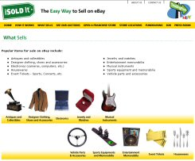
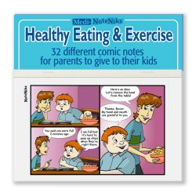
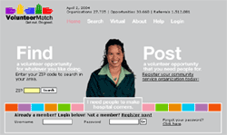
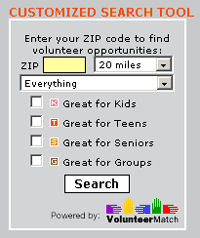
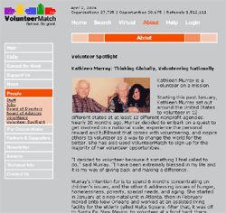

Starting A Fundraising Campaign
Funding Sources and Prospects:
Tapping The Philanthropic WellIn Search Of The Elusive Major Giver
Rating And Evaluating Prospects: Whom Do You Ask For How Much?
Annual Fund Giving & 'Getting' Guidelines
Organizing a Campaign:
How To Recruit Your Volunteer Fund-Raising Team12 Things You Should Know About Setting A Capital Campaign Goal
For Want Of A Campaign Solicitation Kit A Campaign Was Lost
Managing a Campaign:
Designing A Communications Plan To Enhance Your Fundraising CampaignThe Name Is The Game: Memberships And Named Gifts
Asking for the Money: If You Don't Ask You Won't Get


Thanks for visiting FundRaisers.com! Share it with other people for their fundraising campaigns.


Featured Idea:
Great American Duck Races: On Your Mark, Get Set….Float?
Preliminary visions of the duck races – webbed feet placed in starting blocks, feathered chests waddling towards the finish line – were quickly dispelled as two industrial front loaders unceremoniously dumped over 13,000 rubber ducks into the mighty Rogue River. The bathtub buddies raced from the Parkway Bridge to the Caveman Bridge in approximately 45 minutes. The excitement was palpable as the duck's adoptive parents waited for the winners at Riverside Park. An estimated 500 supporters were on hand at the finish line.
The minimal cost of adopting a duck - $10.00 each – encouraged local residents to help the Rotary Clubs raise funds for a news sports facility, Morrison Centennial Park. The generous prizes were integral to the success of the events. The grand prize, $20,000 toward a car from a Grants Pass Auto Dealership went to Tina Lindall, a waitress at Galice Resort and student at Rogue Community College. She found out she was the big winner when her sister called on her cell phone. Lindall says "I was so excited, I had to pull over to the side of the road.”
 An additional 14 prizes
were worth an average of $1,000 each. This brought the total prize incentives for the event to more than
$35,000. Gerry Watt, a Grants Pass local, bought the family package of five ducks. His purchase also came
with a t-shirt, valuable coupons to local merchants and a mini version of the rubber ducky. When the voice
on the other end of the phone asked for Gerald, he assumed it was a telemarketer and almost hung up.
Luckily, he listened long enough to learn he'd won a home decorating package worth $1,500 at Gates Home
Furnishings, a local business.
An additional 14 prizes
were worth an average of $1,000 each. This brought the total prize incentives for the event to more than
$35,000. Gerry Watt, a Grants Pass local, bought the family package of five ducks. His purchase also came
with a t-shirt, valuable coupons to local merchants and a mini version of the rubber ducky. When the voice
on the other end of the phone asked for Gerald, he assumed it was a telemarketer and almost hung up.
Luckily, he listened long enough to learn he'd won a home decorating package worth $1,500 at Gates Home
Furnishings, a local business.
Joan Bille won a $1,000 gift basket from Gottshalks Department Store. When she found out the races were happening on her birthday, she sent her husband out to buy ducks. She says "I never win anything.” She did, however, feel lucky because of the fortuitous timing. Her husband, John, said they considered the four ducks they purchased a $40 donation to the new Sports Park. "Community support for events like the duck races is why we live here,” he said. Winning was an added bonus.
The Rogue Duck Derby presented by
the Rotary Clubs of Grants Pass, Oregon capitalized on the novelty of the event. New concepts are
especially important for communities inundated with requests for donations and non-stop fundraising drives.
Government funds for non profits have been stretched thin and cuts to extra curricular education programs
have sent parents and participating kids out to raise money for clubs and teams that were once funded by
school districts.
The Great American Derby Duck Race is a fund-raising concept owned by Great American Merchandise
& Events. They began staging the events in 1988 and recently added a turtle character to their
lineup. The rubber racers are bar-coded for immediate identification of winners. A funnel-shaped boom is
stretched across the finish line to capture the winners.
Both the duck and turtle characters are trademarked by their three inch size, sunglasses and an appropriate smile. Tim Matykiewicz, a
 American Races
representative estimates the duck and turtle races have raised over three million dollars in the last two
years with more than 200 races around the world. The Great American Races concept is poised for
explosive growth with successful events like the recent Grants Pass race.
American Races
representative estimates the duck and turtle races have raised over three million dollars in the last two
years with more than 200 races around the world. The Great American Races concept is poised for
explosive growth with successful events like the recent Grants Pass race.
Media sponsorship was crucial to the success of the event. The crowds gathered at the finish line at
Riverside Park were treated to entertainment from local radio station sponsors, KAJO and KLDR.
The Duck Races were also promoted by KDRV Channel 12 News and the Grants Pass Daily Courier
newspaper.
 Local businesses provided sponsorship on
three levels: Super Duck Sponsors – Gates Home Furnishings, Premier West Bank and Southern Oregon
Sanitation. Rogue Duck Sponsors: Hellgate Excursions, Home Valley Bank and Bill Thorp/State Farm
Insurance. Quacker Sponsors included 17 local businesses, national franchises and church/civic
groups.
Local businesses provided sponsorship on
three levels: Super Duck Sponsors – Gates Home Furnishings, Premier West Bank and Southern Oregon
Sanitation. Rogue Duck Sponsors: Hellgate Excursions, Home Valley Bank and Bill Thorp/State Farm
Insurance. Quacker Sponsors included 17 local businesses, national franchises and church/civic
groups.
The participating Rotary Clubs are thrilled with the results. Sponsors covered most of the $40,000
costs to stage the event and plans are already underway for next year's duck races. In an interview with the
Grants Pass Daily Courier, race organizer Bill Thorp said, "The community's been
unbelievable, they got a chance to help kids and have some fun”!
-- DeWayne Lumpkin, Freelance Writer
To find out how you can have a Derby Duck Race in your local community send email to racewithus@game-group.com.
Fundraising Tips:
New To Fundraising?
First Time Fundraising Tips
These quick and simple tips for first time fundraisers will get you on track and on your way to the first of many successful fundraisers.
-
Decide how Much Money Your Group Needs To Raise
This will help you evaluate products and programs that will be ideal for your group.
-
Watch For Hidden Costs
Don't let your group's profits disappear because of hidden costs (ex. shipping, prizes).
-
Give Yourself And Your Group Lots Of Time To Prepare
Select your fundraising program early. This will give you lots of time to plan. Include your fundraiser on the school or community calendars and newsletters.
-
Timing
Make sure to stagger the various fundraisers to avoid flooding your potential consumers and to avoid competing with other fundraisers.
-
Set Up Specific Dates And Stick To Them
If you avoid setting clear target dates the campaign tends to drag on and often without direction.
-
Try To Conduct Fewer And More Effective Programs
This will help maintain motivation and avoid "fundraising fatigue".
-
Rely On Your Fundraising Company's Expertise
Ask lots of questions and use your fundraising company's suggestions and advice.
-
Stay Motivated Throughout The Program
Some organizers tend to lose interest once the program is underway. Put a 10-12 day time limit on order taking. It's easier to stay motivated with clear goals and deadlines.
-
Communicate Clearly Before, During And After The Program Is Put In Place
Keep energy levels high by reminding parents, teachers, and other volunteers of the fundraising goals and deadlines.
-
Avoid Shipping And Ordering Problems
Work closely with your volunteers and assure their order forms are legible and filled out completely.
-
Keep Copies Of The Order Forms
Always keep copies of the order forms before you send them to your fundraising company.
-
Recruit Adult Volunteers Ahead Of Time
This will make the distribution of the products to the volunteers more efficient.
-
Double Check Products Received Against Your Order Forms
This needs to be done before the products are given to the volunteers to ensure that nothing is damaged or missing.
-
Keep Absent Volunteers Informed
Don't forget to communicate the program's kick-off and other important meetings to absent volunteers.
-
Have Fun!
A good attitude = better success.
Fundraising Tips:
How To Pick The Right Fundraising Product And Key Questions
Usually the first question that you ask yourself when you realize your group needs to raise funds is:
"What Are We Going To Sell?" Get expert knowledge on how to make the right choice.
There are thousands of products available for fundraisers that range from candy to wrapping paper, cookies
to inspirational goods, and nuts to sausage and cheese. After all, almost anything can be re-sold by
groups for a profit.
Think about the following six questions to help you choose the right fundraising product or program for
your group:
-
How Much Money Does Our Group Need To Raise?
Come up with a goal that is based on your group's needs not just one that sounds good. If your group needs to raise a few hundred dollars, lollipops or a small order of candy bars may be appropriate. If you need to raise over $5,000, you may want to use an order taker fundraiser like a popular chocolate brochure program or a cookie dough fundraiser.
-
What Would We Enjoy Selling?
Your group members will determine the success of your fundraiser. Ask them what they would like to sell and what they'd absolutely not like to sell. The more they like the products, the more confident and motivated they will be to sell them.
-
What Has Worked For Us In The Past?
'If it ain't broke don't fix it' As the saying goes, if you've had success with a certain program year after year- stick to it. Chances are, your supporters are expecting you at that same time every year and your participants are comfortable with selling the product.
-
How Fast Do We Need The Money?
Pre-sale programs (order taker) do take longer than direct sale programs (candy bars, lollipops etc.). If you need to raise funds within 1.5-2 quick weeks, we suggest you fundraise using direct-sale products. If you have 4 weeks or more to wrap up your fundraiser, a pre-sale (order taker) brochure may be ideal.
-
Are The Products We Want To Sell Of High Quality?
A consumer will be happy to support a worthy cause, however they won't be very interested in paying for inferior or significantly overpriced products. Remember that your fundraiser may be an annual or semi-annual event, and nothing builds profits like a reputation for offering top-quality products.
-
Does The Price Point Match The Income Level Of The Community?
As well, make sure that the retail price of the products offered is priced fairly. Offering a fairly priced good at a price that's affordable to help a good cause will lead to quick success!
Fundraising Tips:
Event Fundraising Ideas
Tired of the same old fundraiser event, here are some ideas for special events to raise the money you need!
-
How Much Money Does Our Group Need To Raise?
Come up with a goal that is based on your group's needs not just one that sounds good. If your group needs to raise a few hundred dollars, lollipops or a small order of candy bars may be appropriate. If you need to raise over $5,000, you may want to use an order taker fundraiser like a popular chocolate brochure program or a cookie dough fundraiser.
-
What Would We Enjoy Selling?
Your group members will determine the success of your fundraiser. Ask them what they would like to sell and what they'd absolutely not like to sell. The more they like the products, the more confident and motivated they will be to sell them.
-
What Has Worked For Us In The Past?
'If it ain't broke don't fix it' As the saying goes, if you've had success with a certain program year after year- stick to it. Chances are, your supporters are expecting you at that same time every year and your participants are comfortable with selling the product.
-
How Fast Do We Need The Money?
Pre-sale programs (order taker) do take longer than direct sale programs (candy bars, lollipops, etc.). If you need to raise funds within 1.5-2 quick weeks, we suggest you fundraise using direct-sale products. If you have 4 weeks or more to wrap up your fundraiser, a pre-sale (order taker) brochure may be ideal.
-
Are The Products We Want To Sell Of High Quality?
A consumer will be happy to support a worthy cause, however they won't be very interested in paying for inferior or significantly overpriced products. Remember that your fundraiser may be an annual or semi-annual event, and nothing builds profits like a reputation for offering top quality products.
-
Does The Price Point Match The Income Level Of The Community?
As well, make sure that the retail price of the products offered are priced fairly. Offering a fairly priced good at a price that's affordable to help a good cause will lead to quick success!
-
Try A Breakfast, Lunch Or Dinner Fundraising Event
Food is always a good fundraiser so try a fundraising breakfast, lunch, or dinner event. Keeping it simple is best. A Hotdog event fundraiser is a great way to start. Have your local grocer donate the hotdogs, buns, condiments, chips, and pop. Set up in a busy area, even the parking lot of your grocer. You can use a propane BBQ or boiler for the cooking. Offer up a package deal like "1 Hotdog, bag of chips and can of pop for only $3!" This way you can raise more, faster. Important: Be sure to thank your grocer by giving them recognition for their food donation.
-
Have A Car Wash
A great service and event fundraising idea for all those car-loving people out there. Get your group volunteers together and pick a central location with high car traffic. Make sure you have room for cars to line up and have a few hoses going so you can wash more than one car at a time. As an added fundraiser, sell some snacks and beverages to car owners. Be sure to have enough chairs and shade for your car owners to sit while they wait.
-
Run A Recycled Bottle, Can Or Ink Cartridge Drive
An excellent fundraising idea for our times. Raise money and do good for the environment. Let your community know that they can drop off their refundable bottles, cans, or ink cartridges at a central location. Your group will handle the sorting and keep the refunds. A nickel or dime may not seem like much, but if this fundraiser is well publicized, all that plastic, glass, aluminum, and cartridges will add up quick. To raise more and as an added incentive/service to your community, you can go door to door to pick up their refundable bottles and cans or tie in with a local business to become a drop-off location for your group.
-
Have A Bake Sale
Always a favorite event fundraiser even though it isn't the "newest idea". Why? Well because home-baked goodies can't be beat. Also because some community members love baking and sharing with others. It's recommended to not have these too often though so try spreading them throughout the year. Here's a great tip: Bake some scrumptious cookies using the cookie dough from a popular cookie dough fundraising brochure and make sure to have your order book ready to sell from and raise extra money.
-
Set Up A Book Sale
Another old favorite fundraiser. People are sure to donate books they are done reading and people will be sure to buy them as a good read and a good cause. Ask people to drop off their unwanted books or better yet just go door to door. If you find your fundraiser has left over books you may even want to donate them to a hospital, shelter, or seniors home.
-
Have A Lawn Or Garage Sale
Most everyone thinks about clearing out "stuff" from their attic or garage, well here they can do good too. Have a Lawn sale fundraiser where your community donates items they are willing to let your group sell. Then your group picks a central location to hold your fundraising lawn sale. Once again be sure to publicize this well in advance and many times.
-
Organize A Rubber Duck Race
This event fundraiser is fun and can get kids involved. All you need to do is get the rubber ducks or any other fun thing that can float. Have them numbered to match tickets you sell to supporters. Make sure your event is publicized so you can have a fun turnout on the day of the race at your local stream or body of water. The first duck to cross the finish line wins a prize that was donated by a local sponsor.
-
Have An Auction
The most common way of doing an auction fundraiser is to have collectibles such as pro-athlete or celebrity-signed items (jersey, baseball, bat or hockey stick, movie poster, video tape or DVD) up for sale. Your local pro-sports team or celebrities are usually willing to do this for a good cause. Consider an Online Auction for some of the more lucrative items that were donated. If you don't have a group member that can post them online, check out a local eBay retailer store to sell your items. Read about how you can sell your items online at iSOLDit.
-
Organize A Night At The Races
A fun and new way to have an exciting fundraising event. Not actual gambling, "A Night At The Races" is a re-creation and meant for fun. People watch a pre-taped horse race and bet and win "funny money". Raffles are usually drawn throughout the event. What you need to get started, including the video tape, race program, and race tickets are all provided by companies like "A Night At The Races".
-
Have A Bingo Night
Bingo nights are always popular so try a Bingo night fundraiser. Do it all in the same way as a normal bingo does it; sell cards and call numbers in your school gym or church basement. Instead of money for prizes, give away items donated from your local businesses and be sure to give them recognition for them. As always, good publicity will make your bingo night fundraiser a success.
Fundraising Tips:
Getting Your Fundraiser Noticed
"If you run it they will come..." Not quite. Don't assume that everyone will find out about your fundraiser. Get the word out ahead of time and make it as visible as possible.
-
Get Your Fundraiser Advertised Or Publicized
MOST important is that people know about your fundraising event. Be sure to make the message clear: WHO it's for, WHAT it's for, WHEN, WHERE and HOW much you are trying to raise. Use local radio station community spots, community paper, school and church newsletters, local TV, posters, and flyers. Click here to see how to create a winning press release.
-
Pick A Central And Well Known Location
Pick a location that everyone knows by name; just directing to an address will reduce your attendance. Also, pick a location that can handle the requirements of your fundraising event as well as crowds.
-
Choose The Right Day
Saturdays are usually best. Most people are not working and have fewer family or religious events to attend. Also, check your calendar so you're not competing with another big event or holiday. Better yet, try to set up your fundraising event to take advantage of the other event's people traffic.
-
Ask Trusted Volunteers To Help
Make sure you get the commitment of your fundraising event volunteers. Your fundraiser will fall short if you can't rely on your helpers. Have backup volunteers lined up in case of absent helpers.
Fundraising Tips:
Six Ways To Motivate Your Fundraising Group
A little motivation can go a long way. Motivate your group with prizes, prizes and more prizes without it costing a lot!
-
Intangible Rewards
Rewards with no cash value are proven motivators and provide great entertainment. A few examples include:
- Pie Throwing: Allow the participants to throw cream pies at the organizers' faces if the goal is reached! (you might not like this one but it usually gets the money raised)
- Camp Out: Have the principal camp out on the roof of the school or the group leader(s) camp out somewhere awkward if the goal is achieved. Set an even bigger goal to extend the number of days they must camp out there.
- Activity of Choice: Let your group have an activity of their choice that replaces their normal schedule (for example: a free afternoon of sports activities in the school yard instead of class)
-
Raffles And Prize Draws
For each small goal attained (ex. for every 10 units sold or $100 in sales reached), the participant gets their name put in the raffle for various merchandise. The more they sell, the more times they can have their name put in the raffle and the more chances they have to win.
-
Grand Prize For Your Top Seller
Reward your top seller with a Grand Prize. It may be a computer, a bike, movie tickets, cash, or anything else that inspires your group members. Don't get carried away and offer something your group can't afford.
-
Rewards For Top Class or Team
This is a great way to motivate teamwork in your group. If you're a small group, you can create teams by putting your members in groups of twos, threes, or fours. If you're a school, you can do it by class, and if you're a league, simply do it by team. You can offer the best-selling group a free pizza party, a field trip outing to the place of their choice... ask them what they'd like. Try an ice cream social; everybody likes ice cream! Read about an ice cream social here.
-
Completion Prizes For Individuals
Offering individual completion prizes is great because they motivate and reward everyone in your organization. Offer a completion gift once your member raises a certain amount. For example: Receive $10 cash for every $100 of product sold. Other completion prizes may be a gift certificate to a music, video, book, or sports store.
-
Reward Your Early Birds
To help move your fundraiser along, you can offer early bird prizes to the first, second, and third person who reaches a specific objective by a certain deadline. For example: if you launch the fundraiser on Monday, you can say the first three people that generate $100 in sales or more by Friday will receive a $15 gift certificate.
Also Remember:
-
Ask Sponsors for Prizes:
You can get many prizes for free by simply asking your local restaurants, sports, book and music stores, as well as other local retailers. Tell them what it's for and offer to mention their name in the parent letter and at the campaign launch.
-
Choose the Right Rewards:
What could be worse than no incentives and rewards? Investing in rewards which simply don't motivate your members! Make sure the rewards you choose are relevant to your member's age group and interests. Ask them what they'd like to receive as incentives given a certain budget.
Fundraising Tips:
How To Reach Your Fundraising Financial Goals
There's a lot to think about when planning your fundraiser but make sure you don't miss these key factors your fundraiser's plans.
-
Identify Your Needs And Set Your Goals
The first essential steps to a successful fundraising campaign are to identify your group's needs and set your group's financial goals. If your group members know how the money will be spent and their personal benefits, this will motivate them, keep them focused and help with their sales pitch.
-
Don't Focus On Percentage (%) Profit Alone!
Although the percentage profit for the products you are selling is important, there are many other factors that need to be considered at the same time. One company may offer 50% of sales while another may offer 40%. The 40% company may be providing valuable services such as consulting, kickoffs, incentive programs, timely delivery of merchandise, and custom packing. These advantages will save your volunteers time and lead to higher profits overall. The company offering the lower % may also have a higher quality product. This product's high quality will also help to increase sales and profits for your group. If a company is offering a lower percentage profit, find out why!
-
Get Your Participants Motivated
In most cases, the money raised is a strong incentive, but often prize award programs can be a valuable way to build excitement and boost profits. Be sure to ask your participants what would motivate them and don't forget to be creative.
Fundraising Tips:
Direct Sale Products Vs. Order Taker Fundraisers
What should your group use, direct-sale fundraising products or pre-sale brochures for your next fundraiser? Get the pros and cons on both.
-
Fundraising With Direct Sale Products
How Direct Sale Fundraising Typically Works:
- Your group orders an inventory of products; these products are distributed to your group members who sell the products directly to their supporters; funds are collected at the point of sale.
PROS
- Requires only one contact with individual consumers
- Direct sale takes less time than Pre-Sale because there is no product to deliver and no returned goods to deal with
- Usually has a very low retail price per item which results in an easy sale
CONS
- Slight risk if you over-purchase
- Less variety of products to offer
-
Fundraising With Pre-Sale Fundraisers (Order Taker Brochures)
How Pre-Sale Fundraising Typically Works:
- Your group requests one brochure per fundraising participant. The participants show the brochure to potential supporters. The supporter selects a product from the brochure which the participant records on the brochure order form. These order forms are then returned to your fundraising company, who fulfills the order and ships the products to your group. Your group members and volunteers deliver the products to their supporters. Funds can either be collected at the time of the selection or upon delivery.
PROS
- No risk because it requires no guesswork on how much to order
- Brochures offer a wide variety of products and range of prices
- Easy to include parents and adults in the fundraising efforts by having them circulate the brochure at work
CONS
- Can require more time to complete because products must be delivered and may require dealing with broken or missing items
Vs
Fundraising Tips:
How To Choose A Fundraising Company
Whether you're a first time fundraiser or a veteran fundraiser, you'll be faced with the same decisions. One of them will be how to choose a fundraising company. It's difficult enough to plan a fundraiser, so make sure the company you choose works with you and isn't just in it for a quick sale. Below are some things to think about during your search and decision process.
Good Fundraising Companies Ask Questions
Good fundraising companies will need to know about your group to help you the best. This is what they should ask you:
- Your Group's Financial Goal
- Your Fundraising Timeline
- The Number Of Potential Participants And Their Ages
-
Any Historical Info You Can Provide
(e.g. past fundraisers, participation levels, successes and failures)
If they don't ask these questions, then they are not interested in your needs. It's in a good company's best interest to care and help make your fundraiser a success. They are looking to build customer loyalty and they want to generate repeat business.
Important Things To Know About A Fundraising Company
- How long has the company been in business?
- How many years of experience does the company representative have in fundraising?
- Do they listen to your needs and are easy to work with? If so, then they will help you later if problems arise?
- Are their products of high quality? If so, then your fundraiser will raise more with less hassle?
- What is the percentage profit of sales? Although the percentage profit is important, there are many other factors that need to be considered (product quality, shipping included, time-saving help).
- What services are available to save you and your volunteers time and energy? Does the company provide checklists, collection envelopes, tally sheets, and pre-sorting?
- Are products paid for in advance or upon delivery? Will they work with you on a fair payment option?
- Is there an incentive or prize program? If so, who pays for it?
- How are products shipped and when? Who pays the freight?
- What is the policy regarding damaged or unsold product? What about back orders?
- Can the company provide references?
Fundraising Tips:
Top Ten Tips For Fundraising Success
After consulting fundraising experts, here's a top 10 list of things that all fundraisers need to know to raise more and have fun too!
-
Use Basic Sales Techniques For Better Fundraising
Perfect your introduction. Never start with the question "Would you like to buy..?" because the standard answer is 'NO.' Students should introduce themselves, their group and their group goal with major emphasis on the GOAL. What's the money going to provide? Student volunteers who communicate the organization's purpose make better ambassadors. Look "professional" & Say "thank you". A nice appearance and identifying apparel adds credibility and helps make the sale. If possible, wear a group uniform or a tee shirt with school logo. Remember to say "thank you for helping us meet our goal," and restate the goal.
-
Choose The Right Incentive Prize
What could be worse than no incentive prizes? Investing in incentive prizes which simply don't motivate your participants! Make sure the prizes you get are relevant to your participant's age group and interests. Ask them what they'd like to receive as incentives given a certain budget.
-
Motivate Team Work
Top Class or Team Prizes: This is a great way to motivate the kids and get them working as a team- perfect synergy! If you're a small group, you can create teams by putting your participants in groups of twos, threes or fours. If you're a school you can do it by class and if you're a league simply do it by team. You can offer the best selling group a free pizza party, a field trip outing to the place of their choice. Ask them what they'd like.
-
Reward The Early Bird
You can offer early bird prizes to the first, second and third person who reaches a specific objective by a certain deadline. For example: if you launch the fundraiser on Monday, you can say the first three people that generate $100 in sales or more by Friday will receive a $15 gift certificate.
-
Set Clear Goals And Firm Deadlines
The key to fundraising success is to establish clear fundraising goals and set firm deadlines for reaching those goals. Identify what you need, how much money is required and how long it will take to get it. Otherwise, your fundraising activity can be never-ending. So simply set beginning and ending dates for all fundraising projects. That way everybody knows that there will be closure and things won't drag on.
-
Best To Do Fewer Fundraisers- And Do Them Well
Most fundraising companies who work with organizations to raise money agree that, with fundraising, less can be more. Your fundraising company should be consulting its customers to do only a few fundraisers but, importantly, to do them well. Not only should schools and school groups be watchful of their own fundraising efforts, many advise that it is good practice to know what other groups in the area are doing to raise money.
-
Avoid Duplicating Another Group's Fundraiser
Today children and their parents are fundraising for their schools in addition to raising money for other groups. So it's important to know what, where, when and how others are doing in fundraising. The last thing you want to do is duplicate the efforts of others and over saturate the community. You are only hurting each other. Some groups plan at least one year in advance so that they can coordinate fundraising efforts with neighboring teams, schools and other groups (church, scouts, etc.) who may be selling in the community at the same time.
-
Product Quality Does Count
The old saying "You get what you pay for." Is true for fundraiser campaigns and they're fundraising products. The quality of the product you sell to your supporter is a direct reflection of your group. It will also have a direct effect the next time you fundraise. Higher quality fundraising products will leave people with a positive image of your cause. It will also make your current and next fundraiser easier because supporters will be eager to buy from you, resulting in higher profit.
-
Fundraise At Your Events And Games
Have you ever considered selling products in the stands during games, tournaments, and other events? Well you should because high people traffic equals higher sales. Plus you can raise more in less time. Some groups are so good at this, supporters look for them at each game and event.
-
No Money Down Fundraisers
Is your group short on funds to buy fundraising products up-front? Choose an order-taker fundraiser. Getting an order-taker fundraiser started costs you nothing. Take your orders, collect your money up-front and then place your order with your fundraising company. A simple way to raise funds without putting any money up-front.
Fundraising Tips:
The Scoop On Cookie Dough Fundraisers
Cookie dough fundraising is really hot with fundraising groups today. Find out why and if it's right for your group's next fundraiser.
How Cookie Dough Fundraising Works
Using order-taker brochures, your group members allow your supporters to choose from a selection of delicious flavors that even border on gourmet. Some cookie dough brochures offer flavors like and white chocolate macadamia, chocolate chunk and peanut butter. Some even offer your brand favorites like Hershey's Kisses, Reese's Peanut Butter Cup, M&M's and Reese's Pieces. Once all orders are taken and the money has been collected, the order forms are tallied and the cookie dough is ordered with your fundraising company. About two weeks later, your cookie dough is delivered for you to distribute to your buyers. The dough is usually packed in 3 lb tubs. Because most cookie dough comes frozen some planning with your fundraising company is needed for delivery day. However, some of the newest cookie dough requires no refrigeration and will keep for many months.
No Money Down = No Risk
Since cookie dough fundraising is an order taker fundraiser, you can start fundraising without putting
any money down. This is great if you are low on cash to begin with. Most tubs sell for $10 and expect to
make between 35% - 55% profit depending on how many tubs your group sells. Make sure to choose a
fundraising company that provides free shipping since the weight of tubs can add up fast. A group size of
20 or larger is usually recommended, but any group can raise anywhere from $1,000 - $10,000 and more if
they are motivated and focused.
The taste of freshly baked cookies is sure to get anyone's mouth watering, so you might want to
consider cookie dough since it's likely to be as easy to sell as cookies are to eat!
JustFundraising.com
Scrumptious Cookies Raise Big Dough!Who wouldn't want to eat the most delicious, gooey, tasty cookies, when all they have to do is scoop & bake?
JustFundraising's Top Picks:
Who wouldn't want to eat the most delicious, gooey, tasty cookies, when all they have to do is scoop & bake?
- NEW - Creative Confections : 10 gourmet flavors with ZERO TRANS FATS, including M&Ms, Chocolate Chunk, White Chunk Macadamia...
- NEW - Elite Retreats : includes 21 delicious cookie flavors, pretzels, muffins...
- Free Brochures
- Free Shipping
- No Money Up Front
- Up-to 56% Profit
Tip: Sell even more by having baked samples on hand at your office, bake sale, or busy event.
You earn up to 56% PROFIT like...
> Panthers Football of Flint MI: 30 kids sold 694 tubs ($7,550 raised)
> Hancock County Cross Country: 25 kids sold 756 tubs ($8,050 raised)
Call The JustFundraising Staff For More Info
Toll-Free 1-888-440-4114
Fundraising Tips:
Small Town Poker Tour
 The Small Town Poker Tour raised over $57,000 for the United Way, in Lafayette, LA. This
event is a great example for all charities. "If your event contains the proper elements, success will
follow. We approach every event like it is the Super Bowl for the charities we work with. What you can
raise in one evening with poker, could realistically take many charities six months to raise in a year's
time", stated Mark Fracalossi STPT creator.
The Small Town Poker Tour raised over $57,000 for the United Way, in Lafayette, LA. This
event is a great example for all charities. "If your event contains the proper elements, success will
follow. We approach every event like it is the Super Bowl for the charities we work with. What you can
raise in one evening with poker, could realistically take many charities six months to raise in a year's
time", stated Mark Fracalossi STPT creator.
 The United Way event also maximized their potential by successfully selling sponsorships
and having a great selection of food and beverage which added more funds directly to the bottom line.
Sponsorships can range anywhere from $5,000 to $100,000; depending upon how actively you solicit sponsors.
There are many possibilities to create sponsorship packages that include all sorts of branded items from
custom made table felts with the sponsors design to poker chips. The Chips and felts can then be auctioned
off for the charity. The United Way had a unique array of regional food items including jambalaya. You can
take this further by having a food partner donate the food or provide staffing and items.
The United Way event also maximized their potential by successfully selling sponsorships
and having a great selection of food and beverage which added more funds directly to the bottom line.
Sponsorships can range anywhere from $5,000 to $100,000; depending upon how actively you solicit sponsors.
There are many possibilities to create sponsorship packages that include all sorts of branded items from
custom made table felts with the sponsors design to poker chips. The Chips and felts can then be auctioned
off for the charity. The United Way had a unique array of regional food items including jambalaya. You can
take this further by having a food partner donate the food or provide staffing and items.
The event drew over 550 players who all paid a $60 entrance fee, plus had a chance for unlimited $25 rebuys for the first two hours and a $50 add on after that. A rebuy is when a player's chip count falls below a certain level and the player is allowed to rebuy
Besides the fact that Charity Poker Events are successful, the players experience is what enhances that success. "If you do your homework and concentrate on the player's experience, you will have a very successful event." Fracalossi added.
Poker Fundraising Tips You Can Use
Great Ways To Incorporate Charity Poker Into Your Next Fundraising Event:
-
Pro Player and Celebrity "Meet & Greets"
-
Poker Training Sessions With Professional Players
-
Hospitality Suites
-
VIP Services
-
Poker Boot Camps
-
Poker Seminars
-
Poker Entertainers
Money-making Poker Event Opportunities:
-
Tournament Buy-ins
-
Tournament Re-buys and Add-ons
-
Raffle Sales
-
Silent , Live and Online Auctions
-
Event Programs
-
Sponsorships
-
Poker Satellite Tournaments
-
Photography
-
Food & Beverages
Find Out More About Poker Fundraising Events
Fundraisers.com has a myriad of ideas and suggestions on our... Poker Resource Page
If you would like more info on Small Town Poker Tour email... poker@fundraisers.com
For more information on United Way of Acadiana, see... www.unitedwayofacadiana.org
Featured Idea:
Pulver Enterprises Gambles on a Charity Poker Tournament
 No-Limit Texas
Hold’em has a vocabulary all its own. It isn’t spoken with a thick southern drawl, it sounds like
something uttered in a foreign tongue. “I’ve got 73 diamonds and I’m all in. Flop: Ace - 3 – King
offsuit; Turn: 7; River; 7. I double up with 7’s full. Next hand – 7-3 diamonds again. I’m all in –
again. I get another caller (one with enough chips to take me out). They’ve got pocket 6’s. Flop comes:
Ace of Diamonds - 4 of Diamonds – 8 of Diamonds. I hit my flush on the flop. Then: the Turn comes: 5;
and a 4 at the River. The nut flush is a winner.”
No-Limit Texas
Hold’em has a vocabulary all its own. It isn’t spoken with a thick southern drawl, it sounds like
something uttered in a foreign tongue. “I’ve got 73 diamonds and I’m all in. Flop: Ace - 3 – King
offsuit; Turn: 7; River; 7. I double up with 7’s full. Next hand – 7-3 diamonds again. I’m all in –
again. I get another caller (one with enough chips to take me out). They’ve got pocket 6’s. Flop comes:
Ace of Diamonds - 4 of Diamonds – 8 of Diamonds. I hit my flush on the flop. Then: the Turn comes: 5;
and a 4 at the River. The nut flush is a winner.”
In mid-October, Pulver Enterprises gambled on adding a, “Best Bet for the Cure: Charity Poker No-Limit Texas Hold'em Tournament” to their “Voice on Net” conference in Boston and won big. Not only did their event raise money for the Diabetes Research Institute Foundation and The Barton Center for Diabetes Education, they upped the ante for other nonprofit organizations interested in betting on poker’s resurgent popularity.
The VON Conference already had a number of high-profile attendees expected, but adding John Ratzenberger and Phil Hellmuth to the list of poker tournament players was a major coup. Ratzenberger is famous for his role as “Cliff” on the long-running television series “Cheers” and he is the current host of the Travel Channel's "Made in America.” He’s also a poker aficionado. Hellmuth is a regular at the World Series of Poker and one of the all-time top money makers in professional poker.
 Jeff Pulver, CEO of Pulver
Enterprises, realized his company’s lead attorney, Jonathan Askin, had an inside edge on dealing a
charity poker tournament into the VON Conference’s winning hand. In addition to being a member of the
Bar, Askin once played on the professional poker circui
Jeff Pulver, CEO of Pulver
Enterprises, realized his company’s lead attorney, Jonathan Askin, had an inside edge on dealing a
charity poker tournament into the VON Conference’s winning hand. In addition to being a member of the
Bar, Askin once played on the professional poker circui
His official title at Pulver Enterprises is “Wartime Consiglieri.” That distinctive moniker hints at his propensity for attack strategies when launching a new venture. “It’s important for charities to be savvy when dealing with gambling and charity events,” Askin says. “We’re working on a template that will help other organizations hold similar events.”
Askin had a stroke of genius that allowed Pulver Enterprises to stage the Boston tournament. They tipped the legal scales in their favor by financial contributions going toward raffle tickets. Winners of the tournament received the coveted Pulver Cup and bragging rights, but prizes with monetary value went to holders of raffle tickets. Remember, raffles are legal in Massachusetts (and most other states)…Poker is not!
Askin explains, “The Boston event represents an incredibly steep learning curve. Once you’ve pulled it off once, it becomes a lot easier.” Pulver recently dealt Danny Askin, Jonathan’s brother, into the game. “My brother’s come on board to explore the logistics of holding charity poker tournaments on a regular basis,” he says.
 “I’ve never looked at poker as a vice. It’s more a game of skill than luck,” Askin says. He explains
that playing poker has more in common with participating in a celebrity golf or tennis tournament than
shooting craps or spinning a roulette wheel. “It’s interesting that states allow raffles to be held -
which involve no skill, only luck - but it’s really hard to pull off a charity poker tournament.”
“I’ve never looked at poker as a vice. It’s more a game of skill than luck,” Askin says. He explains
that playing poker has more in common with participating in a celebrity golf or tennis tournament than
shooting craps or spinning a roulette wheel. “It’s interesting that states allow raffles to be held -
which involve no skill, only luck - but it’s really hard to pull off a charity poker tournament.”
There’s nothing like a poker tournament to kickoff a conference, according to Askin. “The game lends itself to very dramatic events at very precise, knowable moments that you don’t see in golf or tennis tournaments. I don’t know if I can capture exactly how sociable our event was. When someone yelled ‘I’m all in,’ 100 people would surround the table to see the hand played out.”
“Probably, the greatest thing about kicking off a conference with a charity poker tournament is giving the attendees a chance to get to know each other in an intimate and psychologically revealing way,” Askin says. “If a person plays in a charity golf tournament, they may get to know the other three people in their foursome. With poker, everyone’s table hopping and you end up meeting about 100 people in your industry - people you may end up dealing with professionally.
He adds, “I particularly loved that we had Michael Gallagher, President Bush’s chief advisor on telecom policy and Stan Wise, President of the Association of State Regulators. In the real world, tension heightens the drama at the poker table which, in many ways is a microcosm of the real world. There was one great moment when Mike, the President’s telecom advisor, went ‘all-in’ against Phil Hellmuth. Mike prevailed. That was a priceless moment.”
“You learn things about people while playing poker that you’d never find out otherwise,” Askin says. “You see how they react to pressure and whether they play it safe.” The 5,000 attendees at Pulver
 Enterprises’ “VON” Conference were given
an opportunity to pre-register for the tournament and staggered start times were designed to accommodate
varying arrival times.
Enterprises’ “VON” Conference were given
an opportunity to pre-register for the tournament and staggered start times were designed to accommodate
varying arrival times.
The credit for being able to focus on charity poker tournaments goes to Jeff Pulver, according to Askin. “Jeff does everything he can for diabetes. He was raised with a very charitable heart.” Pulver’s generosity is a driving force behind development of a matrix for other organizations to model future charity poker events on.
The complexities of holding such an event can’t be fully addressed in the space we have available, but a synopsis of the Boston VON Conference tournament highlights follow:
 “Best Bet for the Cure: Charity Poker No-Limit Texas Hold'em Tournament,” was underwritten by Pulver.com
with proceeds benefiting the Barton Center for Diabetes Education, Inc. and the Diabetes Research
Institute Foundation (DRIF).The sole mission of the DRIF is to support the Diabetes Research Institute
(DRI) at the University of Miami School of Medicine, a recognized world leader in cure-focused diabetes
research.
“Best Bet for the Cure: Charity Poker No-Limit Texas Hold'em Tournament,” was underwritten by Pulver.com
with proceeds benefiting the Barton Center for Diabetes Education, Inc. and the Diabetes Research
Institute Foundation (DRIF).The sole mission of the DRIF is to support the Diabetes Research Institute
(DRI) at the University of Miami School of Medicine, a recognized world leader in cure-focused diabetes
research.
The event included extensive gambling action in a professional Vegas-like environment with cocktails and appetizers throughout the tournament. Participant entry fees were largely tax deductible by benefiting diabetes charities.
Winners of the Charity Tournament advanced to the Celebrity Tournament later in the evening. The last player sitting at each event took home the coveted Pulver Cup. In addition, players and other participants purchased raffle tickets at $100 per book of five. Players received 5 free tickets.
The top prize in the raffle was a $10,000 buy-in to the World Series of Poker Main Event in Las Vegas with roundtrip airfare on JetBlue included. An astounding $5 million prize went to the 2004 WSOP winner, with second place receiving $3.5 million. Prizes at the 2005 event are expected to increase considerably. Additional prizes included technology equipment and services related to “voice on net.
Ofer Gneezy, President and CEO of iBasis, won the $10,000 WSOP buy-in. Brian Leske, from the Governor of Massachusetts office, took the Charity Tournament Championship.
Shannon Pendergrast was a last minute walk-in, signing up for the opportunity to play against Phil Hellmuth. Pendergrast walked away with the Celebrity Tournament Championship. The late afternoon tournament winner was Vladimir Greysukh. The players agreed that it was the best event they’d ever experienced at a conference.
Adding a regulated activity, such as poker, could present challenges that most fundraising campaign managers are unable to contend with.
 Askin believes partnerships with
state-sanctioned poker rooms or Native American Casinos and the charity poker matrix they’re developing
may help alleviate some legal and logistical headaches. He explains, “Organizations would be able to
draw from the pool of dealers at Native American casinos and legally hold poker tournaments on their
premises.” Since these facilities are already designed for poker games, equipment rental expenses and
staffing costs could be reduced by forming partnerships with existing casinos. “Plus, holding an event
for charity would be great PR for the casino,” he adds.
Askin believes partnerships with
state-sanctioned poker rooms or Native American Casinos and the charity poker matrix they’re developing
may help alleviate some legal and logistical headaches. He explains, “Organizations would be able to
draw from the pool of dealers at Native American casinos and legally hold poker tournaments on their
premises.” Since these facilities are already designed for poker games, equipment rental expenses and
staffing costs could be reduced by forming partnerships with existing casinos. “Plus, holding an event
for charity would be great PR for the casino,” he adds.
Individuals and companies might consider hosting a charity poker tournament to benefit a nonprofit organization or as a novel way to kickoff their next conference or event. Because the mingling of poker and philanthropy is relatively new and legal issues are incredibly complex, learning from those who’ve played’em and laid’em is especially beneficial. Jonathan Askin encourages queries at charitypoker@fundraisers.com
About the Cause
 Pioneering new technologies in islet transplantation and other cellular therapies since the early
1970’s, the DRI has successfully reversed diabetes in patients involved in ongoing clinical trials. The
most comprehensive diabetes research facility of its kind, the DRI conducts a broad range of scientific
programs focused on gene therapy, pancreatic stem cell development, molecular biology and transplant
immunology, among others, to speed the most promising findings from the lab to the patient.
Pioneering new technologies in islet transplantation and other cellular therapies since the early
1970’s, the DRI has successfully reversed diabetes in patients involved in ongoing clinical trials. The
most comprehensive diabetes research facility of its kind, the DRI conducts a broad range of scientific
programs focused on gene therapy, pancreatic stem cell development, molecular biology and transplant
immunology, among others, to speed the most promising findings from the lab to the patient.
"The DRI continues to make important strides in diabetes research and islet cell transplantation. In fact, we have made more progress in the last three years than in the last three decades, with patients living insulin free for the first time since being diagnosed with the disease," says Camillo Ricordi, M.D., Stacy Joy Goodman Professor of Surgery and Medicine, and scientific director of the Diabetes Research Institute. Through the dedication of so many generous individuals, like Jeff Pulver, who continues to go above and beyond to support our research initiatives, we will move ahead with our groundbreaking work and fulfill our mission of finding a cure for all people living with diabetes.
 The Barton
Center for Diabetes Education is the United State’s largest, independent camping and educational program
for children who live with diabetes and their caregivers. Some 1,500 children and their families
participate in Barton’s programs annually, including the Clara Barton resident camp, Adventure Programs,
Family Programs, and Day Camps in New York, Connecticut and Massachusetts.
The Barton
Center for Diabetes Education is the United State’s largest, independent camping and educational program
for children who live with diabetes and their caregivers. Some 1,500 children and their families
participate in Barton’s programs annually, including the Clara Barton resident camp, Adventure Programs,
Family Programs, and Day Camps in New York, Connecticut and Massachusetts.
 John Maconga, President of The Barton
Center says, “We depend on fundraisers like the celebrity poker tournament to support our programs so
that Children can attend the camps that could not otherwise afford the expense. Jeff Pulver truly
recognizes the importance of taking care of our kids today and giving them hope for their future by
supporting the camps and research for Diabetes."
John Maconga, President of The Barton
Center says, “We depend on fundraisers like the celebrity poker tournament to support our programs so
that Children can attend the camps that could not otherwise afford the expense. Jeff Pulver truly
recognizes the importance of taking care of our kids today and giving them hope for their future by
supporting the camps and research for Diabetes."
---Dewayne Lumpkin
---Annie Van Bebbe
To find out how you can have a Charity Poker Event in your local community send email to charitypoker@fundraisers.com
Read more about
- Pulver.com click here
- Promotional materials for “Best Bet for the Cure: Charity Poker No Limit Texas Hold'em Tournament,” click here
- For Photographs from the event click here
- For a tournament schedule, raffle prizes, and sponsor list, click here
- Diabetes Research Institute Foundation click here
- The Barton Center for Diabetes Education click here
- Add your charity event to the Poker Player charity poker database.
Fundraising Tips:
Grants Pass: The Little Southern Oregon Town That Could…and Did
 On September 27, Grants Pass, Oregon, population 23,003 raised $300,000 for local charities
on a single day. Two major events were scheduled for the same Saturday and succeeded by aiming at
distinctly different segments of the community.
On September 27, Grants Pass, Oregon, population 23,003 raised $300,000 for local charities
on a single day. Two major events were scheduled for the same Saturday and succeeded by aiming at
distinctly different segments of the community.
The Great American Duck Race was a decidedly
democratic affair. It represented 13,339 mostly local residents adopting ducks, of the yellow rubber
variety, for $10.00 each. The event grossed more than $133,000 dollars with $120,000 going
directly to a new Sports Park, courtesy of three local Rotary Clubs.
The BearFest 2003 was a highly successful fine art
auction benefiting 21 local charitable organizations. It depended on fewer donors, but the twenty
one winning bids totaled $175,500. Life-size fiberglass bear statues became blank canvases for the
artistic vision of local painters, sculptors and designers. Each bear was sponsored by a local business.
The total proceeds from each successful bid goes directly to a local charity chosen by the sponsor.
Evergreen Federal Bank was the major sponsor and project coordinator of BearFest 2003.
Those involved with both fund-raising events agree, "Grants Pass is a very generous community." If
actions speak louder than words, the impressive $309,490 raised is hollering at the top of its
lungs for other communities to take notice.
Read More About:
Fundraising Tips:
Turbo Charging Your Next Fundraiser with Mini Turtles
No, they’re
not Mutant, and no, they aren’t trained as Ninja warriors, but
the Mini Turbo Turtle characters trademarked by Great American Merchandise
&  Events
(GAME) do have a future so bright they’re sporting some pretty
cool shades. GAME has morphed a fundraising product that has proven
highly successful for large charitable organizations into a package
designed for individual schools, church groups, PTA’s and smaller
community groups.
Events
(GAME) do have a future so bright they’re sporting some pretty
cool shades. GAME has morphed a fundraising product that has proven
highly successful for large charitable organizations into a package
designed for individual schools, church groups, PTA’s and smaller
community groups.
The original Great American Duck & Turtle Races have managed to raise hundreds of thousands of dollars per event since their arrival on the fundraising circuit. These large scale events are closely monitored by GAME and the “adopted” rubber characters are leased for the duration of the event only. The Mini Turbo Turtle Races can now be purchased by smaller organizations and used repeatedly for seasonal or annual events or to jazz up other ongoing fundraising efforts.
Mini Turbo Turtle races staged by these school, civic and community groups and others have raised tens of thousands of dollars for worthy causes. If a picture is worth a thousand words, the photos from these events provide an encyclopedic volume of satisfied supporters. Organizers and participants alike are charmed by the infectious smiles and giggling excitement awaiting the results at the finish line.
Henry
Shaw from the Boys and Girls Club of Paris, Texas is thrilled with the
results of their Mini Turbo Turtle Race on August 31, 2003. They purchased
the Big Kahuna package and “adopted” 2,412 of the 3,000
available turtles. This resulted in a net profit of  $27,000.
Shaw says, “This is hands down the most BANG for your buck!”
Marketing for the event included ads on six radio stations and the local
paper. Shaw reports he has “tried several different fundraisers
in the past, and this one has taken the least amount of work for the
most money.” They are already planning for this year’s event.
$27,000.
Shaw says, “This is hands down the most BANG for your buck!”
Marketing for the event included ads on six radio stations and the local
paper. Shaw reports he has “tried several different fundraisers
in the past, and this one has taken the least amount of work for the
most money.” They are already planning for this year’s event.
Jay McCall of Life Donor USA in Tucson, Arizona provides a testimonial of his experience with GAME’s Mini Turbo Turtle Racers. His organization arranged charitable “adoptions” for 700 Mini Turbo Turtles from a Li’l Dipper (1k) package their first year. Minimal advertising included a website for the event; they relied on personal solicitation as the main marketing tactic. Life Donor USA raised $7,000 the first year with the smallest available package. They charged a $10 “adoption” fee for each turtle. Their next race will be Aug. 14, 2004 at the Hilton hotel using their pool and water slides. Additional turtles will be purchased closer to the event date.
The Walton County Chamber of Commerce initiated a modest event in April of 2003. Pam Tedesco indicates their first foray into fundraising with Mini Turbo Turtles was done with “no formal advertising, only word of mouth.” The race took place in a large, figure-eight shaped pool with turtles being dropped down a waterfall. The Li’l Dipper (1k) package resulted in the “adoption” of 300 turtles. Efforts are underway to increase participation for their next event and the Walton County CCOC plans to purchase additional turtles from GAME.
Other organizations staging Mini Turbo TurtleTM Races include: Park Lane Academy Band in Tyler Town, Mississippi and the 21st Century Preparatory School in Racine, Wisconsin; both groups purchased 3,000 Mini Turbo Turtles. The Jackson Hole High School Booster Club in Jackson Hole, Wyoming and the AISD Education Foundation, Inc. in Alvin, Texas each bought 2,000 of the decidedly green, aquatic reptiles. Parker Middle School PTA in Taunton, Montana and the Pi Kappa Phi in Oxford, Ohio each ordered 1,000 of the sporty, rubber characters.
According
to Phil Gordon, Vice President of Events at GAME, “The Mini Turbo
TurtleTM Race, unlike our signature event, the Derby Duck  Race®,
is a racing package in which the client owns the characters outright
(they are leased for a duck race). The Mini package includes the Mini
Turtles, Adoption Shells, a racing manual, a small quantity of promotional
merchandise, and use of GAME logos and trademarks – all of these
items can be used by the client at their discretion.”
Race®,
is a racing package in which the client owns the characters outright
(they are leased for a duck race). The Mini package includes the Mini
Turtles, Adoption Shells, a racing manual, a small quantity of promotional
merchandise, and use of GAME logos and trademarks – all of these
items can be used by the client at their discretion.”
Most planning periods for a Mini Turbo Turtle Race average about two to three months. The clients experience in planning events is crucial to time allotted for development. GAME reports the four key steps to a successful race are: capturing media for advertising; securing sponsorship for prizes and monetary contributions; sales; and logistics. All of these key steps are the responsibility of the client. GAME does not offer customer service support for any of the Mini packages. The client assumes complete responsibility for all aspects of the Mini event.
Great American Merchandise & Event’s Duck and Turtle Races provide a wonderful complement to traditional fundraising efforts like walk-a-thons, candy drives and charity auctions. The unique ability to purchase Turbo Turtles provides nonprofit groups with the ability to stage annual events, amortizing the initial cost over a period of time and multiple Turtle Races. Turbo Turtle Races are fun and exciting; perfectly geared for schools, children’s charities or any fundraising effort appealing to the child in all of us.
-- DeWayne Lumpkin
To find out how you can have a Turtle Race in your local community send email to TurtleRace@fundraisers.com.
Fundraising Tips:
Bling Bling in Boston for Kids with Diabetes

A Marilyn Monroe look-alike added to the evening's magic.
Joslin Diabetes Center sparkled to the tune of $775,000 at this year's High Hopes Diamond Gala; exceeding expectations. This decidedly black-tie event is an annual favorite on Boston's fundraising circuit. Dining, dancing and yes…diamonds. A pair of diamond earrings weighing in at 2.0 carats and set in 14KT white gold, valued at $10,000, to be exact. One lucky attendee exited the Boston Park Plaza Hotel with bling bling in both ears.
Charitable events of this caliber don't happen overnight, yet successful elements can be adapted on a smaller scale while growing an annual fundraiser. Joslin Diabetes Center began raising money for the High Hopes Fund for Kids with Diabetes in 1993. Ten years of support have yielded nearly six million dollars benefiting the Elliot P. Joslin Camp for Children with Diabetes, Joslin's Young Children's and, JumpStart programs, Joslin's School Age Program and Islet Transplant Research Programs.
The dazzle power of the "Diamond Tower" has been a highlight of past High Hopes Diamond Galas. In March of 2000, one unset stone was placed in each of the 500 flutes forming a stunning Crystal Champagne Tower. Four hundred and ninety nine of the champagne flutes held a cubic zirconia. One of the crystal glasses held a 2.0 carat Millennium Diamond appraised at $20,000.
This year's event was centered on a pyramid of 300 jewelry boxes containing one pair of diamond solitaire studs mingling with 299 pair of quality cubic zirconia earrings. Boston's DePrisco Jewelers were diamond partners for the 2003 event. Patrons were given the opportunity to purchase a pair of earrings for $150. Even the imposters were set in 14KT white gold. At the very least, participating supporters walked away with a carat for each ear; only a certified gemologist could identify them as knock-offs. It isn't difficult to imagine the palpable excitement as attendees in formal attire waited to hear if they needed to place an after hours call to their insurance agent before leaving the ballroom.

Louise Penta of Boston, Joslin Gala chairperson, is shown with her son, Paul Penta, a Joslin
patient, and Paul Madden, who oversees Joslin's camping programs for youngsters with diabetes. Ms.
Penta announced a significant gift from the Penta family to help rebuild the camp&Mac226;s dining
hall, where her son worked this summer as a culinary arts student.
Joslin's annual A-List extravaganza incorporates more than diamonds. It glitters with celebrity entertainment, sparkles with champagne toasts, glistens with four-star cuisine and dazzles with dancing duos. The price per seat for this year's gala was $300. Each table seated ten and sponsorships were available for various levels of support from $3,000 to $125,000. An impressive Gala Program Journal is produced each year; raising additional funds for Kids with Diabetes.
The Platters, a legendary R&B group, provided a special performance at this year's affair. Melissa Manchester and Oleta Adams have provided entertainment at past events. Silent and live auctions generated additional excitement with offerings that included: a first-class trip to Germany, dinner for 10 in your home by Terramia Ristorante, and signed sports memorabilia provided by the Boston Red Sox, Bruins, Patriots and more.
Boston's Park Plaza Hotel ballroom sparkled the for Joslin Diabetes Center's High Hopes Diamond Gala.
The sophisticated promotional materials for Joslin Diabetes Center's High Hopes Diamond Gala included various press releases, impressive invitations and supportive informational packages. Many experienced, inspired, and talented individuals contribute to the overwhelming success of Joslin's annual event. Casual observers might caution smaller organizations with the cliché: "Kids, don't try this at home." We prefer Mickey Rooney and Judy Garland's time honored exclamation, "Come on kids, let's put on a show." A creative approach and solid work ethic can overcome many obstacles including lack of experience and limited funding.
The unique idea of surrounding an upscale "raffle" with an air of mystery could be adapted to relatively modest fundraising efforts. Consider selecting a popular local artist and producing a limited edition of signed/numbered prints of a particularly appealing image. Hundreds of charitable supporters could purchase the guarantee of an artist signed print; with an approximate value similar to the cost of participation. One lucky contributor would win the original; worth considerably more than the contribution.
Similarly, picnic baskets could contain gift certificates with lunch for two to various local restaurants. One picnic basket might contain a private party for ten at a particularly prestigious regional restaurant. Again, no one goes home empty handed and individual contributions escalate due to the potential for a relatively big pay-off. The thrill of discovering the winner can be incorporated into multiple venues and retain excitement throughout a lengthy fundraiser.

Joslin President C. Ronald Kahn, M.D., right, pays tribute to Gala honoree Charles H. Hood of the New England-based Hood Company for his many years of support to Joslin Diabetes Center.
The concept is fairly simple - as most good ideas are - and easily adapted to endless prize packages and countless charitable organizations. Joslin Diabetes Center's stellar execution of many time-honored fundraising traditions are rolled into one diamond studded event benefiting the High Hopes Fund for Kids with Diabetes. Consider this an opportunity to learn from a "master craftsman" of charitable foundations with over 100 years of experience in the fruitful field of fundraising.
Joslin Diabetes Center's Website is http://www.joslin.harvard.edu/main.shtml
They can be reached by telephone at (617) 732-2400.
Great Idea:
Let Me Entertain You!
 Expert fundraiser Sue Shifrin-Cassidy, founder of KidsCharities.org, recently
produced a highly successful benefit concert at the Ridgefield Playhouse for Movies and the Performing
Arts in Ridgefield CT, starring award winning entertainer and husband, David Cassidy.
David and his band, in the midst of an international tour, dropped into this historic 500 seat theater for
one night only and brought the house down! Adding to the excitement of the evening was an unannounced
musical appearance by musician Paul Schaeffer of the Late Night Orchestra. Paul stepped
in to play keyboards on David's signature song "I Think I Love You". Proceeds of $78,000 from the concert
and live charity auction, which alone raised over $30,000 in less than 30 minutes, were earmarked for
worthy children's charities including the Juvenile Diabetes Research Foundation.
Expert fundraiser Sue Shifrin-Cassidy, founder of KidsCharities.org, recently
produced a highly successful benefit concert at the Ridgefield Playhouse for Movies and the Performing
Arts in Ridgefield CT, starring award winning entertainer and husband, David Cassidy.
David and his band, in the midst of an international tour, dropped into this historic 500 seat theater for
one night only and brought the house down! Adding to the excitement of the evening was an unannounced
musical appearance by musician Paul Schaeffer of the Late Night Orchestra. Paul stepped
in to play keyboards on David's signature song "I Think I Love You". Proceeds of $78,000 from the concert
and live charity auction, which alone raised over $30,000 in less than 30 minutes, were earmarked for
worthy children's charities including the Juvenile Diabetes Research Foundation.
Great entertainment for a great cause is a winning combination that you can use for your next fundraiser. Even if you don't have access to headline performers, gifted emerging artists are everywhere! Request a donation of time and talent in return for exposure the performer will gain by appearing at your next event. Give it a try!
Contact Information
KidsCharities.org
Juvenile Diabetes Research Foundation
The Ridgefield Playhouse for Movies and the Performing Arts
Featured Idea:
MissionFish: Sell Donated Items At Auction To Support Your Cause
Fundraisers are often overwhelmed with leftover items from rummage sales, flea markets, and White
Elephant events. Historically, much of this unsold inventory has ended up at local thrift shops,
benefiting other nonprofit organizations. Now,
MissionFish and eBay offer an alternative solution for selling much
appreciated donations.
This exciting collaboration allows individuals, local community fundraisers, and nonprofit organizations
an easy way to raise money online. In-kind contributions, obscure collectables and unsold auction items
can be quickly and easily transferred into desperately needed funds.
There are two ways a nonprofit can use this new opportunity to fundraiser:
1) Your supporters can list items on eBay Giving Works and donate a portion of the proceeds from
anything that sells. 2) Your nonprofit can sell on eBay Giving Works – putting special event auctions
online, or turning in-kind donations into cash.
 Independently, eBay and MissionFish have impressive histories of helping nonprofits, of all sizes, help
themselves. Together they’ve teamed up to offer Giving Works and The Giving Assistant, both trendsetting
programs for fundraising. Buyers and sellers are given opportunities to support their favorite causes
while trading on eBay.
Independently, eBay and MissionFish have impressive histories of helping nonprofits, of all sizes, help
themselves. Together they’ve teamed up to offer Giving Works and The Giving Assistant, both trendsetting
programs for fundraising. Buyers and sellers are given opportunities to support their favorite causes
while trading on eBay.
MissionFish provides nonprofit verification, donation collection and disbursement, tax receipting, and
online contribution tracking. It’s the combination of eBay’s formidable presence in the online
marketplace and MissionFish’s functional expertise within the philanthropic industry that’s resulting in
impressive returns for worthy causes. This union of buyers, sellers, nonprofits, and cause-marketers has
been dubbed The Marketplace for Change; an altruistic tool by any other name would be hard pressed to
prove itself more powerful.
There are over 85 million eBay users currently and that number is going up constantly. Almost 1,800
nonprofits are register to potentially benefit from this enormous list of sellers.
Shoppers are rewarded for purchasing items in the Marketplace for Change by having a portion of the
money they spend donated to a worthy nonprofit. Sellers are given the opportunity to donate a portion of
their sales to a pre-selected cause. Upside: 1) Satisfaction in making a difference and supporting
positive change. 2) Assurance that your donation gets to the intended nonprofit. 3) A guarantee that the
selected nonprofit is legitimate and in good standing. Downside: We haven’t found one.
Additionally, those unable to offer significant cash donations can now offer their services in support
of worthy causes. Legal, financial, business and other areas of expertise can be offered on eBay in
support of nonprofit organizations. MissionFish has developed a way for these services to benefit worthy
causes with cash donations and simultaneously reward donors with a well deserved tax break.
Kristin Cunningham
, senior manager of eBay Charity, reports, "To date, nonprofits have raised nearly $30 million on eBay,
benefiting more than 500 charities in 2002 alone." She continues, "eBay is excited to be working with
MissionFish to make it even easier for our community to give back to those in need."
Sean Milliken
, executive director of MissionFish says, "Since we started MissionFish, our nonprofit members have
hoped that one day we would bring our solution, which they love, to a larger community like eBay. We are
thrilled to have this opportunity to create and manage this tool for eBay so that nonprofits can have
access to a whole new revenue stream for the important work they do."
Garnering wisdom from an age old axiom, MissionFish recognized a need and continues to exceed
expectations in filling it. The specific need in this case was an effective tool to transfer in-kind
contributions into unrestricted operating funds. In October, 2000 MissionFish began with a realization
that:
- There are a lot of good people and companies that support nonprofits, and they have a lot of good stuff that they want to give away.
- Most nonprofits can't use the things that those people and companies want to give.
- Nonprofits don't generally have the time, the people or the infrastructure for dealing with in-kind gifts - even when they can use them.
MissionFish easily established the "mission" part of their moniker. "Fish," the second half of this impressive organization’s name breathed new life into an insightful but overly familiar analogy. Bill Shore of Share Our Strength coined the phrase: "giving someone a fish feeds them for a day, teaching them to fish feeds them for a lifetime." MissionFish takes a bold step forward and endeavors to provide nonprofits with a way to build "fisheries," sustaining them perpetually. As a Fishery for nonprofit organizations, MissionFish provides a supportive environment for hatching funds and spawning a flow of revenue without significant financial expenditure or high-tech training.
Sow’s Ears and White Elephants translate beyond Silk Purses and Cash Cows in the capable hands of MissionFish. The odds of success were favorable for MissionFish’s original concept, but no one could have predicted the countless lives that have benefited from their efforts. Their initial launch was as an independent online auction sight allowing donors to offer anything of value to their choice of nonprofit through MissionFish. Items useful to individual organizations were kept; the rest were turned into cash through the auction marketplace.
Benefits abounded for all parties involved. Shoppers enjoyed buying quality merchandise, sometimes hard to find items, while supporting charitable causes. Nonprofits translated unusable in-kind donations into desperately needed operating revenue and donors received tax deductions for their generous contributions.
It took less than two years for the founders of MissionFish to radically alter their organization’s governing structure and financial status. MissionFish began as a for-profit company serving nonprofits in October of 2000. During the course of operation, they recognized the potential for increasing their accomplishments by restructuring the organization as a nonprofit. MissionFish became a service of the Points of Light Foundation in the Summer of 2002. Like minded individuals joined in a mutual effort to "engage more people more effectively in volunteer community service to help solve serious social problems."
The rest, as they say, is history. MissionFish launched "Lunch with a Leader Online Auction," a high-profile and unbelievably successful fundraiser. Political figures, business leaders and A-list celebrities offered bidders a chance to vie for lunch with individuals they admired. The now annual event attracts the likes of First Lady Laura Bush (who also served as Honorary Chair for the event), Arnold Schwarzeneggar, Richard Petty, Pattie Labelle and former First Lady Rosalyn Carter. Last year’s auction raised over $300,000 to benefit Communities In Schools.
MissionFish has also managed blue-chip online charitable auctions like Ebids From The Heart benefiting the American Heart Association and online auctions for Sears, Roebuck and Co., The Oprah Winfrey Magazine "O," and Coors Brewing Company among others.
MissionFish’s continuing support of charitable causes is riding a wave that has yet to crest. Nonprofits should be busy mending and stitching larger and stronger nets to accommodate operating funds swimming in their direction. If an old fisherman was telling the tale of MissionFish, it would be tempting to discount it as one more "fish story." The reality is…its all true. In a few short years, MissionFish has done all this and more. In very short order, a few ripples in the fundraising pool have resulted in a tidal wave of revenue for charitable causes.
-- DeWayne Lumpkin, Freelance Writer
http://www.missionfish.org/
http://pages.eBay.com/givingworks/
http://www.pointsoflight.org/
Here's what they are Saying about MissionFish:
Before our partnership with MissionFish, we generally considered an in-kind gift to be an unkind gift. MissionFish offers our organization a simple way to turn these donated goods into the revenue we need to reach the next child and the next community.
Chandler Arnold, Director of Corporate Strategy, First Book
It's the time of year when thoughts turn to giving-and figuring out what to do with those gifts you wish you hadn't been given. D.C.-based MissionFish understands. Think it's not worth donating that odd white elephant in your basement? Think again.
Washington Flyer magazine, December 2001
The MissionFish auction helped us promote Sears merchandise online, and support the Points of Light Foundation at the same time. This is one of the only cash-free cause-marketing programs that I've ever found, and the results far exceeded our best hopes.
Robert Wery, Senior Manager of Community Relations, Sears, Roebuck & Co.
I have high praise for MissionFish. They helped us get our thrift stores online in a way that makes the most of our network and our national reach. Items we sold online for $75 would have been lucky to get a dollar in one of our stores.
Bart Antle, Executive Director, Society of Saint Vincent de Paul of Houston, TX
Bill Cox, Manager, Society of St. Vincent de Paul Thrift Store, Pittsburgh, PA
-- DeWayne Lumpkin, Freelance Writer
Fundraising Tips:
iSOLDit: Charity Auctions Made Easy
Merging Humanity and Technology through Altruistic eBay Applications
Success, in both the private and nonprofit sectors, often springs from equal parts of pluck and luck. Admittedly, monopolizing on these elusive qualities takes a certain presence of mind. Elise Wetzel demonstrates her intuitive business skills with a cutting edge concept, iSOLD It, which makes raising funds easy for worthy causes.
iSOLD It catapulted to the head of a distinctive class of entrepreneurs searching for ways to work with Internet auctions instead of struggling against them. The idea of launching storefront locations for customers to drop-off items for auctioning on eBay had its genesis in a fundraising project for a playground at Wetzel's children's school.
Her flagship iSOLD It storefront in Pasadena has been so successful that after only nine months of operation, 237 additional stores are scheduled to open under franchise contract agreements in the coming year. At least 50 of these locations will have their doors open for business by the end of 2004.
Wetzel says, “I really think I've tapped into a service that a lot of people are looking for.” That service, as she sees it, is simplifying the selling process on eBay. “It's really easy to buy merchandise on Internet auctions like eBay, but it's complicated to sell.”
The key to successful fundraising ideas is maximization of financial returns while minimizing the workload on understaffed nonprofit organizations. Wetzel believes iSOLD It fulfills that goal. “I see so many nonprofits holding rummage sales and I think this is a much better vehicle for maximizing their return on donated items. eBay has millions of regular users and this traffic means increased demand for the items being sold.”
The age old concept of “supply and demand” is addressed by Wetzel's concept. iSOLD It stores supply the staff and technology to sell goods where they are most in demand, securing top prices for donated items in the process.
They've already partnered with local nonprofit groups and schools. Elementary schools in La Canada , California held a drop-drive that raised several thousands of dollars for school programs pinched by ongoing budget cuts.
Wetzel's business supplied organizational and marketing materials establishing the dates and locations of the drop-drive. This included six different days with three school drop locations and three drop locations within the community. The items collected were auctioned on eBay by iSOLD It at a discount commission rate, offered to all qualified nonprofit groups.
“The beauty of this is you're turning fundraising upside down – you're not asking for money or a handout – you're just giving people a chance to get rid of things they're not using while supporting a cause that's important to them,” Wetzel says.
Their website succinctly states: “iSOLD It now offers a completely innovative, extremely simple way to raise funds for your organization. Simply register your not-for-profit with iSOLD It to qualify for our discounted fundraising fee structure. Then, ask your network of supporters to drop by iSOLD It with items to sell on eBay (be sure to have them specify your organization as the recipient of the funds.”
“Once an item sells, we'll send your organization a check! For even more impact, let iSOLD It help you organize a Drop Off Drive at your school or other location. We can provide the forms for you to use to collect items at a location of your choice.”
 One of the most important elements of a successful fundraising drive with iSOLD It is getting donors to drop-off desirable items that will garner high-dollar bids on eBay. Wetzel says, “It's important to educate people about what types of things sell well on eBay. We can search for comparable items that are selling at online auction sites to determine whether they'll generate high bids.”
The iSold It website includes a list of popular items on eBay: Antiques and collectibles; Designer clothing, shoes and accessories; Electronics such as cameras, computers and stereo equipment; House wares; Tickets to sports events and concerts; Jewelry and watches; Entertainment memorabilia; Musical instruments; Sports equipment and memorabilia and Automotive parts and accessories.
One of iSOLD It's memorable taglines advises nonprofits to “Turn Old Memories into New Money with iSOLD It.” Their website claims it's as easy as 1-2-3 .
Number one: Drop it off. Personalized assistance makes it easy to leave your merchandise in the hands of professionals who will photograph and list individual items on eBay.
Number two: Watch the action. “Once we've listed your item on eBay, we'll send you an email with a link to the auction, so that you can watch all the action as it occurs. Many of our sellers tell us this part is as fun as getting their final check.”
Number three: Collect your check. “After the item sells, we collect payment and professionally ship your item to the winning bidder. Once the transaction is complete, we send you a check. Or, if you prefer, we can send the proceeds to your favorite charity.” Wetzel says, “The turnaround - between dropping an item off and receiving a check - is typically within a thirty day period.” Unsold items can be picked up or donated to local charitable groups.
Wetzel is excited to announce their first national partnership with “Adopt-A-Minefield.” “Most of our fundraising has been on a local level, this is our first national effort,” she says. She hopes an increased national presence from iSOLD It storefront openings will lead to expanding nonprofit partnerships with high-profile causes.
iSOLD It storefronts are stylish and appealing. Their distinctive look was developed to make people who aren't comfortable with computers or selling online feel at-ease. “Our store design is bright, crisp, clean and inviting,” Wetzel says.
Richard & Helene Chemel are part of the first wave of iSOLD It franchise stores expected to crest around the country in the next year. They are thrilled with the storefront concept for online auctions and dedicated to helping nonprofits make use of their service. Their first fundraising drive coincides with the Grand Opening of their iSOLD It storefront in Chatsworth , California this month.
Richard Chemel knew former residents of The Friends of Cabrito House in Canoga Park , California . The Cabrito House is a men's recovery home that helps men get back to “a life worth living.” He says, “Letters were sent to their donor list notifying them that Cabrito House would be the first beneficiary of our store's Charity Program.”
He explains, “This allowed us to encourage supporters to do some spring cleaning and identify unwanted
items of value that will be auctioned off to support Cabrito House.”
Helene Chemel adds, "Since we opened, I've been on the phone calling local schools and organizations to
make them aware of our service. It's a great alternative to selling fundraising products.”
"We believe that being part of the iSOLD It family and their initiative for fundraising in the local
community is a great way for us to be able to give back - right in our own back yard." says Richard.
 Elise Wetzel,
Richard and Helene Chemel and hundreds of individuals expectantly working on iSOLD It locations around the
country are excited about combining a profitable private business with opportunities to support worthy
causes.
Elise Wetzel,
Richard and Helene Chemel and hundreds of individuals expectantly working on iSOLD It locations around the
country are excited about combining a profitable private business with opportunities to support worthy
causes.
Newly opened iSOLD It storefronts have quickly established themselves by selling more items each week than any other store of their kind. Unparalleled service and an altruistic attitude ensure iSOLD It franchises will propel fundraising efforts into the next decade and beyond with their merger of technological savvy and wholehearted humanity.
DeWayne Lumpkin
Annie Van Bebber
For a list of Store Locations Click Here
To read more about Adopt-A-Minefield Click Here
Profile of Elise Wetzel, Founder & President of iSold It.
Elise Wetzel has 15 years of marketing and new product development experience at packaged goods companies
including Nestle, Unilever and Procter & Gamble. In addition, she was part of the initial team behind
online entertainment studio z.com, an Internet start-up backed by technology incubator Idealab.
As Director of Marketing at Nestle Foods, Elise ran an $800 million portfolio of confections brands,
including Butterfinger, Baby Ruth and 100 Grand. Throughout her career, she has placed an emphasis on new
product development and has tested hundreds of product concepts, bringing the winning ideas to launch. In
1999, one of those winning ideas, Nestle Flipz, was voted "New Product of the Year" by BrandWeek.
Elise has a BA from Northwestern University , and an MBA from Northwestern's Kellogg Graduate School of
Management.
Elise is married to Rick Wetzel, co-founder and President of Wetzel's Pretzels, a mall-based fresh-baked
soft pretzel chain with over 200 company-owned, franchised and licensed locations worldwide.
Featured Idea:
Selling Products: A Growing Trend Among Local Community Fundraisers
What usually comes to mind when you think of a local community fundraiser? A bake sale, walk-a-thon, benefit dinner, a show or party... There's no question that these are great ways to raise funds for a cause, but they can involve a considerable amount of planning, and are usually best suited for organizations with a lot of volunteers. Smaller charitable organizations and local community groups have typically resorted to the old tradition of soliciting donations. Some will go door to door, others set up in a local mall or circulate a collection box at work
But many charitable fundraisers are discovering another way to raise funds for local charitable causes as well as for local chapters of large non profits. For many years, schools and sports teams have been raising funds through the sales of a wide variety of items. If this works for schools, teams or scouting groups; why shouldn't it work to raise funds for a local chapter of a non profit or a national charity? Donors respond more with their wallet when they know that the money is going to support a cause. Of course, just helping out is a reward in itself, but getting something in return can fuel even more generosity. After all, we are all consumers at heart. It's only natural that fundraisers will have an easier time reaching more of us by selling products.
Looking For A Way To Help The Hurricane Katrina Victims?
JustFundraising.com is helping any interested group, to raise funds quickly and
communicate inspirational messages, at a time when both are needed most with Hurricane Katrina Donation
Cards. Whether you already have a group, or you're planning on creating one, JustFundraising.com wants to
help and will provide these cards to approved groups, absolutely free of charge.
JustFundraising.com is giving away a total of $45,000 worth of fundraising products to groups who are
committed to helping raise funds for the Hurricane Katrina victims. Some groups that may be interested
include sports teams, church groups, youth groups, schools, even companies.
How Does It Work?
- Step 1: They will provide your group with up to 20 Hurricane Katrina Donation Cards
(depending on the number of fundraising participants). Distribute 1 donation card to each of your
fundraisers. Each donation card has 56 scratch dots.
- Step 2: You will simply ask friends, neighbors, co-workers to scratch 1 or more
dots, and to pay the total of the amounts they revealed ($0.50 to $3.00 per dot). Underneath each dot,
there is also a positive inspirational message. *See examples below
- Step 3: Accumulate all collected funds and write a check out to Unicef, Red Cross,
or any other preferred non-profit organization dedicated to the Hurricane Katrina relief efforts.
These cards regularly sell for $15 each, but JustFundraising.com is providing them to committed groups, absolutely free of charge. With every 20 donation cards, groups can raise $2,300 for Hurricane Katrina relief efforts. JustFundraising.com is hoping to distribute up to 3,000 Hurricane Katrina Donation Cards, which could raise a total of $345,000.
Now's your chance to help! Click here to see how you can receive your FREE KATRINA DONATION CARDS
Examples Of A Few Inspirational Messages Uncovered:
- Ideas are nothing without action
- Give in and you will never win
- Fortune and love favor the brave
- Be a friend when people most need one
Read more about
Featured Idea:
Earn $5 For Your Organization With Every Membership Sold
In these days of tightening budgets, BJ's is proud to offer your school or youth organization a uniquely effective fundraising program: selling and renewing BJ's Memberships through the BJ's Fuel Your Fundraiser(SM) Program.
For every Membership sold or renewed, BJ's will donate $5 to your qualifying school or youth organization. To help you sell more Memberships, BJ's provides a special, money-saving Fuel Your Fundraiser Membership offer to individuals joining or renewing through your organization.
And, of course, you'll have the best sales pitch of all: BJ's Members save time, money and hassle every day with big values on top-brand groceries, merchandise and specialty services.
Apply for the BJ's Fuel Your Fundraiser Program today!
BJ's Nonprofit Partners
United Way of America ® is the national organization dedicated to leading the United Way movement toward its goal of making a measurable impact in every community in America. Across America, the United Way improves lives by mobilizing the caring power of communities. Community-level United Ways are partners in change, working with a broad range of people and organizations to identify and resolve pressing community issues.
BJ's supports the United Way through both corporate contributions and individual Team Member support. Since 2002, BJ's and its Team Members have donated more than $2.5 million to the United Way.
Since its founding in 1947, Dana-Farber Cancer Institute has been committed both to providing cancer patients with the best treatment available and to conducting cutting-edge research to develop tomorrow's cures.
BJ's supports the United Way through both corporate contributions and individual Team Member support. Since 2002, BJ's and its Team Members have donated more than $2.5 million to the United Way.
Since its founding in 1947, Dana-Farber Cancer Institute has been committed both to providing cancer patients with the best treatment available and to conducting cutting-edge research to develop tomorrow's cures.
Since 2001, BJ's and its Vendor Partner Program have raised more than $2 million for Dana-Farber's Women's Cancers Program Ñ proving that great things can happen when good deeds and good business work hand-in-hand.
BJ's supports the Salvation Army® in a variety of ways, ranging from direct corporate financial contributions and product donations to our support of the Red Kettle and Angel Tree Programs in our Clubs.
Funds donated to the Salvation Army's Red Kettle program provide direct support within local communities by helping those in need of financial assistance. The Salvation Army's Angel Tree program provides new clothing or toys for children of needy families. BJ's hosts both of these programs in our Clubs during the holiday season.
St. Jude Children's Research Hospital® is internationally recognized for its pioneering work in finding cures and saving children with cancer and other catastrophic diseases. Founded by late entertainer Danny Thomas and based in Memphis, Tenn., St. Jude freely shares its discoveries with scientific and medical communities around the world. No family ever pays for treatments not covered by insurance and families without insurance are never asked to pay. St Jude is financially supported by ALSAC, its fundraising organization.
BJ's partners with St. Jude by supporting their Thanks and Giving campaign, which encourages consumers to give "Thanks" for the healthy children in our lives, while "Giving" to help children everywhere who are desperately ill and battling to stay alive.
The mission of the National Alliance for Autism Research is to aggressively fund research that will lead to the discovery of the causes, prevention, effective treatments and cure for autism disorders.
Walk for Autism Research is the signature fundraising event of the National Alliance for Autism Research and is both the first and the largest walk program dedicated to autism research worldwide. BJ's is a major Walk sponsor for the New England area.
BJ's Wholesale Club is honored to partner with America's Promise®, the nation's foremost non-profit organization dedicated to mobilizing people from every sector of American life to build character and competence in our nation's youth.
America's Promise is a collaborative effort that builds upon community partnerships to fulfill Five Promises for every youth in America. These are:
- Caring Adults: by developing ongoing relationships with caring adults, youth gain support, care and guidance
- Safe Places: safe places with structured activities provide a haven for children to grow and develop
- A Healthy Start and Future: adequate nutrition, exercise and health care pave the way for healthy bodies, healthy minds and smart habits for adulthood
- Effective Education: marketable skills gained through effective education help youth successfully navigate the transition from school to work
- Opportunities to Help Others: giving back to the community through service enhances self-esteem, boosts confidence and heightens a sense of responsibility to the community
The National Education's Association's (NEA) Read Across America- Building a Nation of Readers is an annual reading motivation and awareness program. Originally created as a one-day event held on Dr. Seuss' birthday, March 2, to celebrate the joy of reading, the NEA's Read Across America has grown into a nationwide initiative that promotes reading every day of the year.
Each February, BJ's celebrates this national event in each of the communities we serve by sponsoring a month-long reading incentive program at its adopted elementary schools. (See BJ's Adopt-A-School Program to learn more about school adoption.)
St. Coletta and Cardinal Cushing Schools is a nonprofit organization that provides specialized living and learning environments to individuals with cognitive and physical handicaps from diverse backgrounds. Children and adults are supported, respected and challenged within the Cardinal Cushing Center's innovative academic, social and vocational programs to help them build a sense of self-worth and fulfill their potential as active participants in their communities.
Since BJ's formation over 20 years ago, the company has raised over $4 million to help support St. Coletta & Cardinal Cushing's mission. Recently, BJ's and its Vendor partners dedicated Partnership Hall, a residence that marks the beginning of new possibilities for physically and mentally handicapped students of the Cardinal Cushing School.
Each year, the American Red Cross responds immediately to disasters such as hurricanes, floods, earthquakes, tornadoes and fires.
Lunch Box Comics: A Healthy Fundraising Alternative
Mindy Myers CEO, Sound Advice, Inc.
Does grilled ham and cheese on white bread, chips, cookies and soda ring a bell? That's because it's typical lunch fare for many school-aged children. Is it any wonder so many youngsters are overweight?
According to the North American Association on the Study of Obesity, elementary school-aged children weigh10 pounds more than they did 40 years ago, on average. Teens are averaging a 10–16 pound increase during the same time period. Who is to blame for this surge of obesity? Many point the finger at working parents suffering from time limitations.
“Making a school lunch is at the bottom of my list of things to do,” says Wendy Goldsby, a single, working mother from Oakland, CA. Her son is 12 years old. “I often don't get home until 7 p.m. I need to spend my time helping my son with his homework and doing chores. I grab whatever's convenient and throw it in my son's lunchbox, even though I know it's not the healthiest.”
Wendy, like many other mothers, often reaches for a quick solution to the school lunch dilemma: pre-packaged foods like chips, cheese or peanut butter crackers and cookies. These foods are high in fat and low in fiber and nutrition.
 Moms like Wendy Goldsby consider Healthy Eating and Exercise comics an antidote to America's fast food craze. “I read each Healthy Eating and Exercise comic before placing it in my son's lunchbox,” she says, acknowledging that the comics have had an influence on her as well as her son. “I now find myself choosing low-fat and whole-grain foods when I'm in the supermarket.”
Colorful wrappers and packaging that lure unsuspecting children towards unhealthy foods often feature recognizable characters from Saturday morning cartoons. Gullible children are drawn to the foods that become associated with fun. Food content becomes secondary, and that's when Mindy Myers, CEO of Sound Advice, decided to create NoteNiks.
Mindy says “I felt it was my duty, as a parent, to direct and guide my son at all times. Of course it wasn't practical or even possible to offer guidance while he was away at school. That's when I came up with the idea of a school lunch-time message that promotes healthy eating, exercise, and wellness.”
Changing a culture that reveres fast food and candy may seem impossible, yet the fundraising community can impact the growing obesity problem. Organizations aren't restricted to selling items without social value. They can opt for alternative, healthy fundraising products. It's possible - even admirable - to raise funds WHILE positively impacting children's lives.
Lunchbox Comic Pads make an excellent fundraising item for schools, churches and family-related organizations and nonprofits. Priced at only $4 per pad retail, Sound Advice offers an attractive wholesale and fundraising pricing structure for fundraising campaigns. It also makes perfect sense to offer products that are beneficial to youngsters when fundraising for a charitable cause that's related to children.
Each pack of Healthy Eating & Exercise comics contains 32 different notes. Orders for 5,000 or more NoteNiks allow organizations to custom print information on the header and back panel. A charity's name, contact information, event calendar and any other pertinent information receive star-billing with this customized option.
Each comic includes affirmative messages. Topics include: portion control, choosing water over soda, healthy snacks, getting enough exercise, the influence of body image by the media and many others. Moms are encouraged to place a comic in their child's lunchbox each day. The notes serve to remind children to make healthy choices and offers solutions to the barrage of fat-filled and sugary food temptations. The comics also serve to educate parents who are influential in their children's eating habits.
Using comics to guide and advise children while they are at school originated with LunchBox NoteNiks, Mindy's first comic note pad product. The LunchBox NoteNiks for kids ages 4 - 7 stress the importance of family; the lunchBox NoteNiks for kids ages 8 - 12 help kids grapple with bullying, teasing, friendship making, and other growing up issues.
The education industry and back-to-school markets immediately welcomed LunchBox NoteNiks as a unique educational product with social value. When the concept and products were applied to school fundraising, the response was overwhelming. Parents who were tired of buying wrapping paper and subscribing to magazines opened their wallets for the groundbreaking product that positively impacts a child's life.
Karen Kolligs, Fundraising Co-Chair for Tehiyah Day School in El Cerrito, California, says, “We used LunchBox NoteNiks as one of our fundraisers last year. Parents loved the idea of buying something that could positively affect their child's behavior.”
Tehiyah Day School raised over two thousand dollars from sales, which enabled the school to buy much needed library books and supplies.
 Karen adds, “I
bought three packs of LunchBox NoteNiks for my son. At first, I thought the comics would be a cute lunch
box surprise, but over the weeks I saw a change in my son's behavior. I think the comic messages were
really affecting him.”
Karen adds, “I
bought three packs of LunchBox NoteNiks for my son. At first, I thought the comics would be a cute lunch
box surprise, but over the weeks I saw a change in my son's behavior. I think the comic messages were
really affecting him.”
LunchBox NoteNiks soon paved the way for the creation of Medi-NoteNiks. This new line of lunch-time comics was specifically designed for children with medical and behavioral conditions that need extra emotional support. As with the LunchBox NoteNiks, Medi-NoteNiks comics are placed in a child's lunchbox as a way to support a newly diagnosed child.
Every child experiences the rollercoaster of growing up, but kids with medical or behavioral problems have twice as many hurdles to overcome. Medi-NoteNiks are comic notes that acknowledge the emotional baggage that often accompanies these differences.
Mindy says, “Medi-NoteNiks for kids with Asthma was the first Medi-NoteNiks pack I created. My youngest child has asthma and there were many nights when I listened to her cry about being embarrassed to take medication in front of friends and feel ashamed of carrying her inhaler around. The comic notes served to normalize the condition and made her feel like she wasn't the only one with asthma. The notes also helped her to be mindful to cover her mouth on a cold day, keep away from smoke and stay indoors after the lawn was freshly mowed.
After learning that Attention Deficit Disorder in elementary-school-aged children has increased 700% since 1990, I created a pack of Medi-NoteNiks for kids with ADD/ADHD. These notes were designed to work in conjunction with medication, psychological intervention and parental support.”
The goal of Medi-NoteNiks for kids with ADD/ADHD was to help a child who is trying to manage his focus problems, distractibility issues, and behavior problems. The fun and supportive comic notes help children understand their limitations. They also empower frustrated parents who, until now, have had few tools to help them intervene in their child's treatment.
Comics for children with pediatric diabetes and cancer are slated for Spring of 2005. For more information regarding Sound Advice email noteniks@fundraisers.com.
-- Annie Van Bebber
About Mindy
When individuals recognize a problem in their society, they respond in many different ways. Some turn a blind eye; others join organizations that operate on local, regional and national levels to address the issue. A few pioneering personalities, like this month's “Person Behind the Cause,” launch their own companies and place personal fingerprints on a variety of causes.
Mindy Myers founded Sound Advice, Inc. and began producing NoteNiks – comic note products – in response her son's ADD diagnosis and her daughter's asthmatic condition. Her personal concerns now encompass a variety of children's health issues with corresponding products offered to fundraisers across the country.
Juvenile obesity and diabetes is covered along with preventative oral hygiene. Attention deficit disorder and asthma were a natural and the product line continues to expand through client input and Mindy's creative brainstorming.
The most striking element of NoteNiks is their ability to address physical, medical, emotional and psychological issues in a way that children are receptive to. The response from clinicians and medical professionals has been overwhelmingly positive. Mindy's background was perfect preparation for this endeavor.
She earned her master's degree in Education with a focus on Child Development from Mills College in CA, and is a doctoral candidate at Saybrook Graduate School where she is studying Educational Systems Design. She is also a past Editor of Parents Magazine. Mindy lives in Oakland, California, with her husband and children.
Featured Idea:
Fundraising on Tippy Toes – The Dancing Gourmet
Linda Hymes and Derek Gaffney have created a fundraising opportunity like no other. They are sautéing, simmering, pirouetting and pas des deuxing a path to charitable causes close to their hearts. The Dancing Gourmet: Recipes to Keep You on Your Toes, is a cookbook that has won prestigious awards and is now available to non-profit groups looking to match the product with the passion.
A classically trained, professional ballet dancer, Linda Hymes has spent a lifetime keeping a close eye on her tutu'd waistline. Her love of healthy gourmet dining has led to a second career as a chef; trained at none other than Le Cordon Blue Ecole de Cuisine in London, England. She refuses to sacrifice sumptuous flavor or picturesque presentation in pursuit of naturally healthy food.
Hymes' husband, Derek Gaffney, is an accomplished photographer and sculptor. His photographs of her classically inspired appetizers, entrees, and desserts garnered two Gourmand food photography awards this year. The Dancing Gourmet Cookbook won a Gold Medal for Best Photography/Illustration (English/USA). It also received a Silver Medal for Food Photography in the World; chosen from 3,500 entries published in 33 languages, representing 60 countries.
These formidable partners have captured center stage and remain standing for ovations that continue to pour in. The Dancing Gourmet was recently honored with the ForeWord Cookbook of the Year Award. Accolades have been sprinkled throughout prominent food and dance publications. Cooking Light Magazine, Le Cordon Bleu's head chef, and New York City Ballet's Principal Dancer, Judith Fugate, all rave about Hymes and Gaffney's unique approach. Hymes also writes a regular food column for Pointe Magazine.
The combination of performing and culinary arts extends to health-conscious recipes and atmospheric black and white photos of Linda Hymes in traditional ballet poses. The same dual sensibilities were the inspiration behind a recent foray into fundraising. In efforts to promote and support dance training, performance, and appreciation, The Dancing Gourmet Cookbook is available to non-profit groups of all sizes.
Fundraising efforts are customized for cheerleading squads, dance troupes, ballet studios, jazz and tap students, and other groups struggling to fund their artistic endeavors. A recent press release says, "The cookbook can be sold through redeemable postcard mailers, student book drives, patron mailings, summer program and competition favors and corporate sales and matching grants."
The Dancing Gourmet can initiate a fundraising drive by providing marketing tools and handling distribution. Rewards are offered for outstanding fundraising efforts. They can include one or more of the following: A free master class or cooking demonstration, and/or a private book signing in individual schools and dance studios.
Dancing Gourmet cookbooks sold through direct mail fundraising can be personalized and signed by Linda Hymes for individual purchasers. The quality of the publication guarantees satisfaction from patrons and encourages support for the arts and healthy options for young dancers concerned about nutrition.
Hymes and Gaffney donate a portion of their own profits to a scholarship fund through Career Transition for Dancers. They also actively support National Dance Week with their professional expertise, personal appearances, and financial contributions.
 This is an auspicious beginning, whetting our appetites for upcoming efforts by The Dancing
Gourmet. Hymes has recently participated in book signing events at theatrical and dance gatherings.
She also had the honor of introducing Jamie Oliver, the Naked Chef, for a recent promotional
appearance at the Palo Alto Borders Book Store. Her recent celebrity guest demonstrations were highlights
at the San Francisco Gourmet Product Show and the Sacramento Food and Wine Show. Gaffney and
Hymes coordinate their cookbook and fundraising efforts nationwide with Illinois Theatrical Dance
Distributor and activities in the San Francisco Bay Area, where they reside.
This is an auspicious beginning, whetting our appetites for upcoming efforts by The Dancing
Gourmet. Hymes has recently participated in book signing events at theatrical and dance gatherings.
She also had the honor of introducing Jamie Oliver, the Naked Chef, for a recent promotional
appearance at the Palo Alto Borders Book Store. Her recent celebrity guest demonstrations were highlights
at the San Francisco Gourmet Product Show and the Sacramento Food and Wine Show. Gaffney and
Hymes coordinate their cookbook and fundraising efforts nationwide with Illinois Theatrical Dance
Distributor and activities in the San Francisco Bay Area, where they reside.
A new cookbook is simmering for next year: The Nutcracker Sweet. It will focus on desserts; many inspired by the perennial ballet classic. The Dancing Gourmet hopes to have the cookbook ready prior to the next holiday season. This should provide a stunning centerpiece for holiday fundraising efforts.
-- DeWayne Lumpkin, Freelance Writer
Read More About The Fundraising Opportunity With
Featured Idea:
Dandy Don's Homemade Ice Cream Resourceful Fundraising with a Cherry on Top!
 Fundraising
resources come in many forms. Recent articles at Fundraisers.Com
have focused on beneficial technological and information
resources. This
month we offer a slightly more homespun flavor in our resource area.or
should we say 101 different flavors. Yes, it's time to get savvy about
the finer points of adding an ice cream social to your local fundraising
event.
Fundraising
resources come in many forms. Recent articles at Fundraisers.Com
have focused on beneficial technological and information
resources. This
month we offer a slightly more homespun flavor in our resource area.or
should we say 101 different flavors. Yes, it's time to get savvy about
the finer points of adding an ice cream social to your local fundraising
event.
Dandy Don is a connoisseur of hot fudge, caramel sauce, crushed nuts, sliced strawberries, rainbow sprinkles and maraschino cherries - delicately dancing atop dazzling ice cream sundaes. Scooping, serving, and sprinkling may not be aerobic activities, but Dandy Don's Homemade Ice Cream & Sundae Bar Catering maintains a frenetic pace while working with small and large charitable organizations alike.
Make-A-Wish-Foundation, Special Olympics, Red Cross, Children's Hospital of Los Angeles, Cystic Fibrosis Foundation, Starlight Children's Foundation and Boys and Girls Clubs are some of the larger groups Dandy Don has dished with. He's also helped smaller groups in Southern California scoop up extra fundraising funds with ice cream sundae bars at charitable events. They include the Friends of Robinson Garden, LA Shanti, and the Club Culinaire Francais.
Charity auctions, tasting events, and fundraising dinners are examples of venues where ice cream adds that extra sprinkling of fun. After all, they didn't coin the phrase "Ice Cream Socials" for no reason. Sundae bars bring out the inner child in attendees at black tie suppers and more casual charity events. Scoops of ice cream drizzled with toppings, whipped cream and a cherry makes everyone a little more..social.
Dandy Don offers tips from years of experience in his for-profit business and a winning record of partnerships with charitable organizations. Don says, "You can easily sell a two ounce ice cream sundae - half the size of four ounce sundaes from ice cream parlors - for $2.00 or more at fundraising events." Supporters of charities don't mind the price because proceeds are going to a worthy cause.
Don adds, "I always recommend collecting the money in advance. It helps project what you really need on hand for attendees. You can lose money by buying more than you can sell." He repeats his advice again for added emphasis, "Never do it on 'spec.' Always pre-sell the event."
Partnering with a local ice cream shop is a great way to go according to Dandy Don. "You can usually get the ice cream shop to promote the event along with your organization so you're getting double coverage." Ice cream retailers may offer their products at cost or if you're really lucky they'll donate some or all of the ingredients for an ice cream sundae bar.
Adding an "ala mode" option to bake sales can also increase sales by fifty cents an item. Don says, "Charging fifty cents for a scoop of vanilla ice cream on a slice of pie or a piece of cake can increase profits at bake sales which are always great money makers."
Don does have some basic advice for those wishing to get supporters screaming for ice cream. He advises, "Don't buy the big three gallon containers at food warehouses. By the time you get to the bottom the ice cream will be melted and messy." It's that old penny-wise and pound-foolish caution. "Most large retailers carry ice cream in five quart containers. This size is your best bet for profitability and ease of service," he says.
"You also need to have plenty of volunteers on hand to scoop. The fewer hands scooping the greater your chance of melting ice cream," according to Dandy Don. He adds, "When it's possible, I try to pre-scoop ice cream into individual bowls. Teams of two per tub work well. The bowls can be stacked in large ice chests and brought out as needed." Pre-scooped bowls of ice cream need to be refrozen for two - three hours before serving. Don says to plan your time accordingly.
Dandy Don urges EXTREME caution when handling dry ice. "Only adults who are thoroughly skilled with handling dry ice should go near it. NEVER let children come in contact with dry ice." Curiosity can tempt even adults to touch or taste dry ice. "Second and third degree burns can happen quickly. Handling dry ice is like handling fire," Don says. When in doubt, don't use it. Ice and dry ice should be placed on top of ice cream in coolers. "Remember, cold air falls and hot air rises," he adds.
You can expect to get approximately 30 scoops out of a five quart container. Plexiglass containers or large ice chests can usually be found at party rental agencies. "Keep in mind the sun will always be an issue for outdoor summer events using ice cream. If possible, toppings are best served under a cover of shade, as most toppings melt at 80°F. During the summer, always hold ice cream events indoors," Dandy Don advises.
Hot fudge isn't always practical for ice cream sundae bars. Don says squeeze bottles of chocolate sauce usually cure the chocolate craving. He also says buying packages of cookies and candy bars and crushing them yourself is a money saver. "Rainbow sprinkles are more popular than the chocolate ones and you can find them in most candy aisles," according to Don, "Whipped cream in cans is a also good bet."
For that gourmet touch, fresh fruit can be sliced on site. In Don's experience, "People love to see the food being prepared. Any kind of fresh fruit can be sliced right at the ice cream bar." Strawberries, kiwis and bananas are popular choices.
If there's a large ice cream distributor in your area, they may offer a mobile freezing unit for serving ice cream novelties at local fundraising events. If not, dry ice can be used to keep novelties frozen prior to being purchased by attendees as fundraisers.
Rewards for meeting your group's fundraising goals are an important gesture when teaching younger people about the value of giving and serving your community. Most of the groups Dandy Don's serves for achieving their goals are advised, early on, that their reward will be a Hot Fudge Sundae Bar with all the trimmings.
Don says he always serves his 'Top Ten Toppings' at thank you parties for hardworking fundraisers. Young people recognize the generosity of this reward because they eat sundaes regularly and know the cost of extra special toppings.
Hard workers who made or exceeded their goals know that their ultimate sundae vision will be a reality when the community's goal is met. Don says, "Next time, give your best winning effort more than just another pizza. Always let the kids put lots of toppings on their sundae!" He adds, "They earned their reward. If they do over indulge, they might learn that too much of a good thing (especially sweet treats) requires moderation."
A few succinct testimonials prove the power of ice cream as a valuable resource for fundraisers. Here are a few words from organizations that have benefited from Dandy Don's generosity and delectable sundaes.
- From the AIDS Project LA: Dandy Don, thank you so much for your time and your delectable contributions to our event. Summer Party was a huge success and you helped us raise thousands of dollars to benefit AIDS Project Los Angeles.
- From Temple Knesset Israel: On behalf of the Board of Governors of Knesset Israel, please accept our sincere thank you for donating the ice cream for our 75th Anniversary Celebration. Everyone loved the ice cream and was pleasantly surprised to know it was kosher.
- From Make-A-Wish-Foundation: Thank you so much for participating in our 8th Annual Wine Tasting & Auction. Your stand was one of the most successful. It certainly made for a fun evening.
Go to Dandy Don's website for more ideas in the "catering" section. You can also read many more thank-you notes from organizations that discovered the nostalgic draw of ice cream sundae bars at fundraising events. You'll scream, they'll scream, we'll all scream with delight over funds raised with ice cream.
-- DeWayne Lumpkin
--
Annie Van Bebber
Read More About:
Dandy Don's Homemade Ice Cream & Sundae Bar Catering Click here
Featured Idea:
VolunteerMatch: Connect The Volunteers With The Cause
VolunteerMatch generally prefers to walk the walk. When required to talk the talk, they pragmatically opt for a less is more philosophy. Their formal Mission Statement sums it up: VolunteerMatch is dedicated to helping everyone find a great place to volunteer. Their official slogan puts it even more succinctly: Get Out. Do Good. Need we, or they, say more? Probably not, but brevity is not our strongest suit. Allow us to sing the praises of VolunteerMatch.
A familiar
tune from the roots of Americana repeats the refrain: It only takes
a spark to get a fire going, and soon all those around will warm up
to its glowing. VolunteerMatch provides the spark. Willing volunteers,
worthy nonprofit organizations, and corporate partners pour on the fuel
for a bonfire of satisfying opportunities; their cooperative efforts
result in a warm altruistic and philanthropic glow spreading through
communities across America.
The successful approach by VolunteerMatch is threefold. They provide Community Service Organizations with a highly effective volunteer recruitment tool. Many small to medium nonprofit groups benefit from VolunteerMatch's powerful presence within the online community of giving. Individual volunteers receive instant access to a wealth of opportunities linked to their geographic location, age range, passion for particular causes, and hours of availability for service. VolunteerMatch 's corporate services provides over 20 companies with a far more efficient method of maximizing corporate volunteering efforts.
“VolunteerMatch is designed to make it easier than ever for anyone to find a rewarding way to volunteer,” said Jason Willett, director of communications for VolunteerMatch. “We succeed because our community is made up of a network of nonprofit, volunteer and business leaders committed to civic engagement.”
This triple
threat to apathy encourages participation by all sectors of the philanthropic
community: Volunteers, Community Service Groups, Corporate Partnerships.
The simplicity of the idea and the development of powerful software
have been the keys to VolunteerMatch's success. Their website is amazingly
easy to navigate. It includes an evolving list of elements used to narrow
a potential volunteers search for opportunities to work with
organizations. This criteria leads to potentially satisfying volunteer
experiences and promotes ongoing and growing levels of volunteer participation.
The result: individuals and organizations blazing with passion for service
to others.
Community
Service Organizations are encouraged to register with VolunteerMatch.
They are rewarded for registration with services to assist with the
recruitment and management of volunteers. All tax-exempt organizations
are eligible to register including: social, civic, charitable, educational,
governmental, and political groups. This growing community is composed
of over 25,000 organizations representing more than 30,000 volunteer
opportunities.
What nonprofit organizations are saying about VolunteerMatch:
"Thanks
again for making your site available to volunteers. Our little Village
Temple Soup Kitchen in New York City, which feeds 150 needy people each
week, has had over 1000 page views in the last 9 months and over 100
new volunteers since I listed our opportunity on the VolunteerMatch
site. It has really made a difference."
J. Dean Chavooshian, Chairman, Village Temple Soup Kitchen
"Thanks
to VolunteerMatch, we have had an overwhelming response to our volunteer
opportunities. In fact, we have had so many volunteers that we have
been able to create extra volunteer opportunities! Thanks to VolunteerMatch,
our program is expanding. And best of all, the service is so useful
that I can keep up!"
Bev Kay, Board Member, The Holiday Project
Many individuals feel a burning desire to serve others and discover difficulties finding a fulfilling opportunity. VolunteerMatch makes is as easy as the click of a computer mouse. After logging onto their website, visitors are prompted to enter their ZIP code. Further information results in a wide range of volunteer opportunities located within most communities.
The criteria used to assist with matching volunteers to opportunities and organizations includes: personal causes of interest, professional and technical skills, scheduling and availability, and geographic location. Frustrations involved with securing meaningful volunteer appointments melt away as a wealth of options blaze to life through clicking cursors. To date, VolunteerMatch, has provided more than one and a half million volunteer referrals.
What volunteers say about VolunteerMatch:
"I
just want to thank you for your wonderful service. I found the perfect
opportunity 2 blocks from home! I will be a general office aid for the
Bronx YMCA for 2 days a week. I would never have found it without your
service. Again, thank you very, very much."
Emma Padilla, Volunteer, The Bronx YMCA of Greater New York
"I
found VolunteerMatch and thought it was very helpful. It's a much easier
way to find a place to volunteer."
Sophia Wu, 8th Grade Volunteer, Canyon Hills Jr. High,
Chino Hills, California
"I
visited your site earlier in the year, and contacted our Zoo to become
a volunteer. I just completed Docent training there and am having the
best time. At the Zoo, I feel as if I'm making a difference. I'm helping
animals and teaching others to respect all living creatures, even those
normally unloved like reptiles and amphibians."
Barbara Mathieson, Volunteer, Nashville Zoo
A customized, co-branded version of VolunteerMatch , "VolunteerMatch Corporate," is licensed to corporations, making it easier for employees to volunteer. Corporate partners and participating companies read like a who's who list of Fortune 500 and/or Blue Chip corporations. They include: Nike, Dell, Microsoft, AT & T Wireless, Verizon, Target, Coca-Cola, Charles Schwab, Lexmark, Merrill Lynch, Lucent Technologies, and Gap, Inc., among others.
Numerous studies have demonstrated an increase in job satisfaction and employee loyalty when opportunities to give to others are made available. Such volunteer opportunities include assistance with special events, ongoing volunteer positions, and technical/professional services offered on a pro-bono basis. Participating companies are well aware of the benefits derived from a partnership with VolunteerMatch Corporate. They're staunch supporters and consistent benefactors of this valuable service; lighting fires under uninitiated companies is a pressing goal. VolunteerMatch strives to help companies realize the potential benefits of a work environment that promotes giving to others.
What VolunteerMatch Corporate Clients have to say:
"VolunteerMatch
Corporate is an efficient and fun way that enables our employees to
'expand their playing field' and get involved in the community. Compared
to traditional methods of gathering and communicating volunteer information,
VolunteerMatch Corporate has made opportunities for community service
more accessible to employees. It also provides us with a convenient
way to track and recognize employees for their efforts."
Gina A. Warren, Director of Global Community Affairs, Nike
"The
Coca-Cola Company and its employees are committed to bringing value
to communities nationwide through volunteerism and community service
activities. By providing our employees access to VolunteerMatch, we
give them direct, fast and easy connections to organizations throughout
the country that need volunteer support. At The Coca-Cola Company, VolunteerMatch
has proven a valuable resource for our employees and a great tool for
Reaching Out, our Company's employee volunteer program."
Dominique V. Love, Manager, Corporate Contributions, The Coca-Cola
Company
Fundraisers.Com is not alone in singing around VolunteerMatch's community campfire. Their user-friendly website has won Webby Awards and honors have been received from the Smithsonian Institution and MIT. The Wall Street Journal, The New York Times, The Washington Post, USA Today, Forbes, ABC News, CBS, MSNBC and the Oprah Winfrey Show have melted proverbial s'mores around the flames ignited by VolunteerMatch's exemplary services. This choir of admirers spreads the warmth and encourages everyone to "pass it on."
-- DeWayne Lumpkin
Read
More About:
www.volunteermatch.com
Featured Idea:
VolunteerMatch: Connect The Volunteers With The Cause
VolunteerMatch generally prefers to walk the walk. When required to talk the talk, they pragmatically opt for a less is more philosophy. Their formal Mission Statement sums it up: VolunteerMatch is dedicated to helping everyone find a great place to volunteer. Their official slogan puts it even more succinctly: Get Out. Do Good. Need we, or they, say more? Probably not, but brevity is not our strongest suit. Allow us to sing the praises of VolunteerMatch.
A familiar
tune from the roots of Americana repeats the refrain: It only takes
a spark to get a fire going, and soon all those around will warm up
to its glowing. VolunteerMatch provides the spark. Willing volunteers,
worthy nonprofit organizations, and corporate partners pour on the fuel
for a bonfire of satisfying opportunities; their cooperative efforts
result in a warm altruistic and philanthropic glow spreading through
communities across America.
The successful approach by VolunteerMatch is threefold. They provide Community Service Organizations with a highly effective volunteer recruitment tool. Many small to medium nonprofit groups benefit from VolunteerMatch's powerful presence within the online community of giving. Individual volunteers receive instant access to a wealth of opportunities linked to their geographic location, age range, passion for particular causes, and hours of availability for service. VolunteerMatch 's corporate services provides over 20 companies with a far more efficient method of maximizing corporate volunteering efforts.
“VolunteerMatch is designed to make it easier than ever for anyone to find a rewarding way to volunteer,” said Jason Willett, director of communications for VolunteerMatch. “We succeed because our community is made up of a network of nonprofit, volunteer and business leaders committed to civic engagement.”
This triple
threat to apathy encourages participation by all sectors of the philanthropic
community: Volunteers, Community Service Groups, Corporate Partnerships.
The simplicity of the idea and the development of powerful software
have been the keys to VolunteerMatch's success. Their website is amazingly
easy to navigate. It includes an evolving list of elements used to narrow
a potential volunteers search for opportunities to work with
organizations. This criteria leads to potentially satisfying volunteer
experiences and promotes ongoing and growing levels of volunteer participation.
The result: individuals and organizations blazing with passion for service
to others.
Community
Service Organizations are encouraged to register with VolunteerMatch.
They are rewarded for registration with services to assist with the
recruitment and management of volunteers. All tax-exempt organizations
are eligible to register including: social, civic, charitable, educational,
governmental, and political groups. This growing community is composed
of over 25,000 organizations representing more than 30,000 volunteer
opportunities.
What nonprofit organizations are saying about VolunteerMatch:
"Thanks
again for making your site available to volunteers. Our little Village
Temple Soup Kitchen in New York City, which feeds 150 needy people each
week, has had over 1000 page views in the last 9 months and over 100
new volunteers since I listed our opportunity on the VolunteerMatch
site. It has really made a difference."
J. Dean Chavooshian, Chairman, Village Temple Soup Kitchen
"Thanks
to VolunteerMatch, we have had an overwhelming response to our volunteer
opportunities. In fact, we have had so many volunteers that we have
been able to create extra volunteer opportunities! Thanks to VolunteerMatch,
our program is expanding. And best of all, the service is so useful
that I can keep up!"
Bev Kay, Board Member, The Holiday Project
Many individuals feel a burning desire to serve others and discover difficulties finding a fulfilling opportunity. VolunteerMatch makes is as easy as the click of a computer mouse. After logging onto their website, visitors are prompted to enter their ZIP code. Further information results in a wide range of volunteer opportunities located within most communities.
The criteria used to assist with matching volunteers to opportunities and organizations includes: personal causes of interest, professional and technical skills, scheduling and availability, and geographic location. Frustrations involved with securing meaningful volunteer appointments melt away as a wealth of options blaze to life through clicking cursors. To date, VolunteerMatch, has provided more than one and a half million volunteer referrals.
What volunteers say about VolunteerMatch:
"I
just want to thank you for your wonderful service. I found the perfect
opportunity 2 blocks from home! I will be a general office aid for the
Bronx YMCA for 2 days a week. I would never have found it without your
service. Again, thank you very, very much."
Emma Padilla, Volunteer, The Bronx YMCA of Greater New York
"I
found VolunteerMatch and thought it was very helpful. It's a much easier
way to find a place to volunteer."
Sophia Wu, 8th Grade Volunteer, Canyon Hills Jr. High,
Chino Hills, California
"I
visited your site earlier in the year, and contacted our Zoo to become
a volunteer. I just completed Docent training there and am having the
best time. At the Zoo, I feel as if I'm making a difference. I'm helping
animals and teaching others to respect all living creatures, even those
normally unloved like reptiles and amphibians."
Barbara Mathieson, Volunteer, Nashville Zoo
A customized, co-branded version of VolunteerMatch , "VolunteerMatch Corporate," is licensed to corporations, making it easier for employees to volunteer. Corporate partners and participating companies read like a who's who list of Fortune 500 and/or Blue Chip corporations. They include: Nike, Dell, Microsoft, AT & T Wireless, Verizon, Target, Coca-Cola, Charles Schwab, Lexmark, Merrill Lynch, Lucent Technologies, and Gap, Inc., among others.
Numerous studies have demonstrated an increase in job satisfaction and employee loyalty when opportunities to give to others are made available. Such volunteer opportunities include assistance with special events, ongoing volunteer positions, and technical/professional services offered on a pro-bono basis. Participating companies are well aware of the benefits derived from a partnership with VolunteerMatch Corporate. They're staunch supporters and consistent benefactors of this valuable service; lighting fires under uninitiated companies is a pressing goal. VolunteerMatch strives to help companies realize the potential benefits of a work environment that promotes giving to others.
What VolunteerMatch Corporate Clients have to say:
"VolunteerMatch
Corporate is an efficient and fun way that enables our employees to
'expand their playing field' and get involved in the community. Compared
to traditional methods of gathering and communicating volunteer information,
VolunteerMatch Corporate has made opportunities for community service
more accessible to employees. It also provides us with a convenient
way to track and recognize employees for their efforts."
Gina A. Warren, Director of Global Community Affairs, Nike
"The
Coca-Cola Company and its employees are committed to bringing value
to communities nationwide through volunteerism and community service
activities. By providing our employees access to VolunteerMatch, we
give them direct, fast and easy connections to organizations throughout
the country that need volunteer support. At The Coca-Cola Company, VolunteerMatch
has proven a valuable resource for our employees and a great tool for
Reaching Out, our Company's employee volunteer program."
Dominique V. Love, Manager, Corporate Contributions, The Coca-Cola
Company
Fundraisers.Com is not alone in singing around VolunteerMatch's community campfire. Their user-friendly website has won Webby Awards and honors have been received from the Smithsonian Institution and MIT. The Wall Street Journal, The New York Times, The Washington Post, USA Today, Forbes, ABC News, CBS, MSNBC and the Oprah Winfrey Show have melted proverbial s'mores around the flames ignited by VolunteerMatch's exemplary services. This choir of admirers spreads the warmth and encourages everyone to "pass it on."
-- DeWayne Lumpkin
Read
More About:
www.volunteermatch.com

Ideas For How To Form A Tax-Exempt Nonprofit Corporation
Guest Article By Alon Nager, Legal Counsel for Grassroots.org
Introduction
Starting a nonprofit corporation is not as difficult as you may think. With the right tools, ideas, structure and support, forming a nonprofit should be a piece of cake. That is not to say that the process isn't time consuming. Many hours must be devoted to the process of making your organization official and tax-exempt. Before deciding whether to proceed with the process, you may first want to consider the advantages and disadvantages.
 There are important advantages to forming a nonprofit corporation. First, you are eligible to apply for and receive federal and state tax exemption. These exemptions can save your organization hundreds or thousands of dollars every year. Second, you may apply for and receive many public and private donations which are not available to other types of organizations or individuals. Third, corporate status will protect you and others against personal liability should a lawsuit ensue. Fourth, your organization will possess a separate and perpetual legal existence with formality and structure.
There are important advantages to forming a nonprofit corporation. First, you are eligible to apply for and receive federal and state tax exemption. These exemptions can save your organization hundreds or thousands of dollars every year. Second, you may apply for and receive many public and private donations which are not available to other types of organizations or individuals. Third, corporate status will protect you and others against personal liability should a lawsuit ensue. Fourth, your organization will possess a separate and perpetual legal existence with formality and structure.
Forming a nonprofit corporation also has its disadvantages. First, there is a lot of paperwork involved in forming the corporation, filing for tax-exemption and keeping in line with annual reporting requirements. Second, the government charges various costs and fees to incorporate and file for tax-exempt status. Third, much time and energy is required to run the business. Fourth, there are various restrictions imposed upon dissolution, namely, you cannot distribute any profit to board members. Fifth, there are restrictions placed on your organization's activities. For example, you can only focus a small amount of your efforts on political activities. Finally, you are always subject to oversight by the Attorney General of state.
When forming a non-profit corporation, there are some extra steps involved. In addition to preparing and filing incorporation documents, paying filing fees and electing board members, you must apply for tax-exempt status with the IRS and your state's taxing body. This issue is discussed in more detail later in the article. For now we should consider the purposes for which you may form a nonprofit.
Nonprofit vs For-Profit
 Nonprofit corporations differ significantly from for-profit corporations in several ways. Nonprofit corporations are formed pursuant to different state law than for-profit corporations. Due to this fact, the requirements for incorporation, day-to-day operations, reporting requirements and handling of finances will all differ. The two types of organization also differ in what they are allowed to try and accomplish.
Nonprofit corporations differ significantly from for-profit corporations in several ways. Nonprofit corporations are formed pursuant to different state law than for-profit corporations. Due to this fact, the requirements for incorporation, day-to-day operations, reporting requirements and handling of finances will all differ. The two types of organization also differ in what they are allowed to try and accomplish.
Unlike for-profit corporations, which are generally formed for "any lawful purpose", nonprofit corporations must be formed to accomplish one or more specific purposes. These purposes typically benefit either the general public, part of the community, or a particular group of members. Typically, a tax-exempt nonprofit group must be formed to pursue educational, charitable, scientific, religious, literary, or cultural goals. Only these groups will gain exemption under section 501(c)(3) of the IRS code.
In other exceptional cases a group can be formed for other purposes yet still be eligible for tax-exempt status. Public schools, libraries, and other government organizations also qualify as public charities, although they usually have not applied for 501(c)(3) status. There are other sections of the code which provide for different exemptions for organizations with different structures and purposes.
Starting Your Nonprofit
 Incorporating your nonprofit will be a time consuming and sometimes tedious process, but will be rewarding if you do it right. Use the following information to guide you through the process, making sure that you complete all the steps:
Incorporating your nonprofit will be a time consuming and sometimes tedious process, but will be rewarding if you do it right. Use the following information to guide you through the process, making sure that you complete all the steps:
1) Visit your Secretary of State's website to receive valuable information and materials
First, decide which state you want to incorporate in. Most nonprofits incorporate in the state where their principal place of business is located. Next, contact the secretary of state from the state you choose. (To see a list of Secretary of State web sites go to this site.) Some states provide an "Articles of Incorporation" form and pertinent state statutes that will help you create your bylaws and other important corporate documents.
2) Choose and protect your corporate name
This step is critical because your name will be used in your stationery, business cards, contracts, etc. You also want to make sure that you pick a name that conveys to others what you hope to achieve through your nonprofit. Remember that your name is the first thing that the community, business partners and grant agencies will see.
This step is critical because your name will be used in your stationery, business cards, contracts, etc. You also want to make sure that you pick a name that conveys to others what you hope to achieve through your nonprofit. Remember that your name is the first thing that the community, business partners and grant agencies will see.
There are a couple of other legal requirements to watch out for in choosing your corporate name. First, many states require you to use a corporate designator such as Incorporated, Company, Corporation, etc. Second, some states prohibit the use of certain words in a nonprofit's corporate name. Contact your secretary of state, research state statutes, or simply contact Grassroots.org for help with creating your corporate name.
3) Draft and file the articles of incorporation
 The "Articles of Incorporation" document is your primary incorporation document and must be carefully drafted and reviewed. The filing of this paperwork with the Secretary of State, which generally costs between $100 and $200, triggers the beginning of your organization's existence. For guidance on how to draft and file the Articles of Incorporation please review the materials provided to you from your Secretary of State as well as the relevant state statutes. If you use another corporation's articles as your model, please be sure to follow state law and tailor the articles to your organizational needs. Simply copying the articles from another source can have harmful consequences.
The "Articles of Incorporation" document is your primary incorporation document and must be carefully drafted and reviewed. The filing of this paperwork with the Secretary of State, which generally costs between $100 and $200, triggers the beginning of your organization's existence. For guidance on how to draft and file the Articles of Incorporation please review the materials provided to you from your Secretary of State as well as the relevant state statutes. If you use another corporation's articles as your model, please be sure to follow state law and tailor the articles to your organizational needs. Simply copying the articles from another source can have harmful consequences.
Once you have completed the articles, it is a good idea to have it reviewed by a legal professional. For qualifying Grassroots.org members, we will review your legal incorporation documents at no charge. For more information please contact Grassroots.org.
4) Prepare bylaws for your nonprofit
The bylaws are central to the way your corporation will be organized and operate. The bylaws set forth the procedures for holding meetings and elections, resolving disputes, managing corporate operations, insuring corporate heads, etc. The bylaws also contain blanket tax provisions applicable to tax-exempt nonprofit corporations.
It is imperative as with the articles that the bylaws are not treated as a meaningless, tedious legal requirement. The bylaws will dictate how your organization functions and in turn what it becomes in the future. For this reason alone, you should make sure that you understand what each provision means and what its effect is on the corporation. You must also be careful to follow state law.
For some examples of nonprofit bylaws, please visit the following links:
http://www.tnwoodturners.org/bylaws.htm
http://www.littlerocklake.org/501c3.htm
http://www.mncn.org/bylaws.htm
http://www.veteransparty.us/By-Laws.htm
5) Apply for federal tax exemption
The final step in the incorporation process will be filing for tax-exempt status with the IRS. This is a very important step in that a favorable decision may exempt your organization from paying corporate income tax, may give donors tax incentives and may also provide you with other tax relief. Tax-exempt status will also allow your organization to apply for grant money.
Please note that you should be timely in your filing. You should file within 27 months after you file your articles of incorporation. Do not procrastinate! There are many pitfalls if you file late.
Before you begin your application, be aware that the entire process will take an average of 12 hours to complete. The IRS estimates that it takes about 4 hours just to familiarize yourself with the complicated forms.
When you are ready to begin:
a) Go to the IRS exemption organization information page.
b) Search for the applicable form (all forms require Adobe Acrobat reader on your machine):
Form 1023 for 501c3 charitable, scientific, religious, educational, or literary purposes
Form 1024 for most other purposes
c) Open the appropriate form on your computer and complete the forms.
If you are having trouble filling out the forms, determining which form to use, or wish to have your forms reviewed by our team, please apply for our free legal consulting program.
6) Appoint the initial directors and hold the first meeting of the board
7) Obtain any licenses and permits that are required
Conclusion
 Once you have completed the steps listed above you have successfully incorporated your nonprofit and applied for 501c3 status. In most cases your 501c3 status will be granted so long as you completed the forms correctly and your organization's purpose is indeed a "charitable" one. The process of incorporating can seem tedious, time-consuming and difficult at times, but it is definitely worthwhile in the long run for a successful organization.
Once you have completed the steps listed above you have successfully incorporated your nonprofit and applied for 501c3 status. In most cases your 501c3 status will be granted so long as you completed the forms correctly and your organization's purpose is indeed a "charitable" one. The process of incorporating can seem tedious, time-consuming and difficult at times, but it is definitely worthwhile in the long run for a successful organization.
Following incorporation there are still many tasks that one must become familiar with, such as filing tax returns, employment taxes, preparing minutes of corporate meetings, handling charitable donations, etc. If you wish to speak with a professional about issues pertaining to the operation of a nonprofit, please apply for our free legal consulting program.
Links to Other Information
Center of Philanthropy and Civil Society
Charity Channel
Internet Non-profit Center
The Grantsmanship Center
Why War?
About Grassroots.org
Grassroots.org is a 501(c)(3) nonprofit organization that provides free services to other nonprofit organizations in the US and Canada, including free web hosting, free web design and free legal consulting. Grassroots.org also provides information on various issues to the general public through the use of its 40+ topical sites, directories (see http://www.shelters.org), its blog (http://www.grassroots.org/blog) and its discussion forums (http://www.grassroots.org/forums).
Featured Resource:
TechSoup: The Technology Website for Nonprofits
Make Technology Work For Your Cause!
CompuMentor provides a literal Technical Knock-Out (TKO) for high-tech headaches plaguing nonprofit groups; courtesy of a one two punch from the information and products offered at TechSoup. TechSoup operates as a national web-based resource, providing invaluable computer and software information to nonprofit organizations on a daily basis. TechSoup also offers a product philanthropy service called DiscounTech that makes donated and discounted technology products available to nonprofit organizations with 501c3 status.
TechSoup
Debuting on May 9, 2000, TechSoup was an immediate heavyweight champ in the nonprofit sector, placing computer complications on the ropes for charitable groups of all sizes and weight classes. On any given day, TechSoup’s website serves up 380 how-to articles distributed between 16 technological categories. In addition, nonprofits can find 67 downloadable worksheets. All information is formulated by technology experts and nonprofit staff. (See our sidebar for a selection of current titles).
Fifteen discussion forums are used by more than 3,000 members of the nonprofit community. Some messages refer to technological problems many readers encounter; others offer solutions to these specific issues and provide general applications information. Being surrounded by a formidable group of like-minded charitable workers provides moral support as well as technical assistance. The TechSoup message boards can also serve as a powerful networking venue for groups and individuals.
In this
age of increasing reliance on information technology, TechSoup is a
particularly popular disseminator of cutting-edge computer expertise.
TechSoup’s E-newsletter, “By the Cup,” is read by
34,000 subscribers each week. Website registration and E-newsletter
sign-up take mere minutes, yet reap ongoing rewards.
IT (Information Technology) For Charities, a British Resource Guide
for Charities and Nonprofits placed TechSoup #1 in its 2001 Top Ten
Most Useful Technology Web Sites. Their explanation for bestowing top
honors on TechSoup:
- If you want to find out about IT information or resources for charities, then this is the place to go on the web. A technology site dedicated to the non-profit sector and with a fantastic amount of the most useful and important information. Updated since last year, it still contains the essential guides, articles and information on technology planning, hardware, software, using the internet, networks, databases and much more. And it now has a series of discussion (message) boards covering the same topics, where you can ask questions and get answers from IT experts and other charity users. And all built for the non-profit sector. Excellent.
- The United Cerebral Palsy & Handicapped Persons Association named TechSoup their Nonprofit Site of the Month both for September 2000 and April 2002. Their reasoning: Because it’s a great technology site for nonprofits.
Paula Pruett from the Roanoke Valley YMCA writes:
- I really appreciate all the resources that TechSoup makes available. It is definitely most helpful to those of us in the nonprofit community trying to wear many hats and find info ASAP. Again, many thanks!
DiscounTech: A Service of TechSoup
Tagging into the ring in January of 2002, DiscounTech just celebrated its second anniversary of providing 501c3 organizations with donated and discounted technology products. Uppercuts to under-funding, left hooks to outdated software and right jabs to archaic computer equipment have been accomplished through impressive corporate partnerships.
Twenty-five individual providers of computer equipment and valuable software have teamed up with DiscounTech to offer over 240 donated and discounted products and services. They are available to qualifying organizations for a nominal administrative fee (that includes shipping, handling, and live customer support). Because product providers place their own restrictions on eligibility, terms of use vary accordingly.
Regular notification of “New Products” offered through DiscounTech is provided by free subscription and read by 22,000 subscribers. Since the service launched in 2002, almost 20,000 organizations have received more than 576,000 products through this service. This translates to more than $160 million in nonprofit funds freed-up for alternative uses within the charitable sector.
Grateful nonprofit groups have crowned a champion in their ongoing battle against outdated technological tools. What they’re saying:
You are providing a terrific service to the nonprofit industry especially the small nonprofits who struggle and have a difficult time making ends meet with their programming much less with technology upgrades. Thanks to you, my organization now has Office 2000 and we have greatly improved our capacity. Buckets of thanks for a great service to the nonprofit community!!!
Julie Condy, Stage to Stage, Inc, New Orleans
I recently received the shipment of products I ordered and I cannot begin to thank you enough. We received well over $10,000 worth of product for a little under $1,000. And the shipment arrived in less than 2 weeks from order date!
We are a small, but growing (thanks to you) non-profit specializing in mental health services. We just celebrated our 50th Year serving the Merrimack Valley here in Massachusetts. Over the years many agencies have had to close their doors, but we have managed not only to survive but to grow at a slow and steady pace.
With over 90% of our budget directly funding services, little is left for technology. Thanks to the DiscounTech program we now have a network of 15 computers at our main office with a VPN connecting a satellite office with 5 computers. Our goal is to eventually equip every clinician, every offsite program, and every staffer out in the community with PCs and the ability to communicate with central office anytime and anyplace.
Thank you again DiscounTech! Thank you from all the staff and the people we serve.
Maureen Tessier, Mental Health Association of Greater Lowell, Inc
TechSoup and its DiscounTech service are projects of San Francisco Bay Area’s CompuMentor. CompuMentor provides hands-on consulting services to nonprofit Bay Area clients and oversees the nationwide efforts of TechSoup and DiscounTech. Their astounding success is due, in part, to continuing support from many organizations and corporations, including Surnda Foundation, AOL Time Warner Foundation, W.K. Kellogg Foundation, the Charles Stewart Mott Foundation, and Carnegie Corporation of New York and The Morino Institute.
-- DeWayne Lumpkin
Read About
CompuMentor
TechSoup
DiscounTech
E-mail
questions regarding this article to Questions@fundraisers.com
Featured Idea:
Lennon Legacy Lives On With A Little Help From Many Friends
 What do you get when you cross an international cultural icon, an altruistic desire to provide musical inspiration to students, and a school bus outfitted with state of the art, multi-media recording equipment? The John Lennon Educational Tour Bus, of course. Throw in a songwriting contest with prizes totaling over $250,000, heavy hitters as corporate sponsors and music giants as judges and you’ve got a phenomenal vehicle for creating musical sparks in students and building a bonfire of public awareness for music literacy.
What do you get when you cross an international cultural icon, an altruistic desire to provide musical inspiration to students, and a school bus outfitted with state of the art, multi-media recording equipment? The John Lennon Educational Tour Bus, of course. Throw in a songwriting contest with prizes totaling over $250,000, heavy hitters as corporate sponsors and music giants as judges and you’ve got a phenomenal vehicle for creating musical sparks in students and building a bonfire of public awareness for music literacy.
.jpg) The John Lennon Educational Tour Bus has been touring public and private schools, colleges and universities, community organizations, Boys and Girls Clubs, concerts and music festivals since 1998. Students and other visitors are given an opportunity to gain hands-on experience with cutting edge recording equipment, video production facilities, high quality traditional and electronic instruments…all for free.
The John Lennon Educational Tour Bus has been touring public and private schools, colleges and universities, community organizations, Boys and Girls Clubs, concerts and music festivals since 1998. Students and other visitors are given an opportunity to gain hands-on experience with cutting edge recording equipment, video production facilities, high quality traditional and electronic instruments…all for free.
It doesn’t end with an incredible opportunity to play with gadgets that are usually reserved for the upper echelon of professional musicians. Schools and community groups are invited to apply to schedule a visit via e-mail using the link on the top left of this page.
Elton John, Carlos Santana, Amy Grant, Jellybean Benitez, Michael W. Smith, Wyclef Jean, Black Eyed Peas, Dave Koz, and Sugar Ray are just a sampling of the illustrious list of musicians who serve on the Executive Committee of the John Lennon Songwriting Contest. They’ve demonstrated their commitment to the project by stopping by and working with the kids; placing the term "hands-on" in a literal context.
Generous support from Maxell, Yamaha, NAMM, EMI, Discmakers, and MusiciansFriend.com, among others, provides operating funds and prizes for the John Lennon Songwriting Contest and Educational Bus.
Operating as a non-profit program, this mobile facility is decked out with two distinctly different recording studios. The traditional arrangement is located in the back of the bus and has the capability of recording concerts and special events in addition to on board recording. An impressive selection of string instruments, percussion equipment and multiple keyboards are paired with a powerful, on-board public announcement system that allows fledgling musicians, as well as celebrities, to stage performances outside the John Lennon Bus.
The multi-media studio is located in the front portion of the John Lennon Bus. It is set up for audio/video equipment demonstrations, manned by professional technicians and provides an opportunity for visitors to assist in the recording and editing process. Participating students exit the bus with a Maxell DVD of the music video of their experience. Each original composition is written, performed, accompanied, recorded, videotaped and edited by musical novices with the assistance of three on board engineers who travel with the Bus.
Each year the John Lennon Bus makes over 150 stops at schools, concerts and community organizations. Over 60,000 miles are racked up on the odometer, annually. The powerhouse combination of an instantly recognizable, iconic namesake, generous corporate sponsorship and an amazingly dedicated, talented and charitable group of musicians and technicians keep feet tapping and lips humming across the country. Putting songs in the hearts of students is a huge step in opening their ears and eyes to other learning opportunities.
The John Lennon Educational Tour Bus proudly debuted its $300,000 renovation on January 15th at the 2004 NAMM Winter Conference in Anaheim, California. Technological improvements have sharpened the already cutting edge facilities. In 2003 alone, the Bus generated over 674 million exposures. This year, stops have been added at U.S. Stateside Military Bases allowing children of service personnel an opportunity to participate.
Yoko Ono Lennon retains a close connection with the program bearing her late husband’s name and it is with her permission that John Lennon’s name and likeness is being used. She says, "John would have been very excited about this project. It’s exactly the kind of thing he wanted to happen."
-- DeWayne Lumpkin, Freelance Writer
Additional information on the Bus and the Contest is available at www.jlsc.com.
For the John Lennon Educational Tour Bus:
MEDIA CONTACT
Jo-Ann Geffen, JAG Entertainment
(818) 905-5511 (office)
(818) 266-8433 (cell)
jgeffen@jagpr.com
If you would like to become a Corporate Sponsor, please contact Lennon@fundraisers.com.
CORPORATE SPONSORS
Featured Idea:
Cause Marketing: Partner Your Campaign With Business
 Corporate investment in cause marketing partnerships could hit $1 billion this year and Cause Marketing Forum, Inc., is doing a great deal to educate individuals and organizations about this powerful partnering strategy.
Corporate investment in cause marketing partnerships could hit $1 billion this year and Cause Marketing Forum, Inc., is doing a great deal to educate individuals and organizations about this powerful partnering strategy.
A novice can begin with articles as basic as Cause Marketing 101 while seasoned professionals can tap into more advanced materials related to marketing a cause with the help of a business partner.
“Cause marketing is the development of mutually-beneficial marketing relationships between companies and causes,” explained David Hessekiel, founder and president of CMFI.
The "mutually beneficial" element of cause marketing is behind their explosive popularity around the globe. Businesses and corporations can distinguish themselves from competitors, increase visibility and sales through successfully promoting awareness about worthy causes. Their images are burnished by demonstrating responsible "citizenship" through giving back to communities. Depending on the nature of the partnership, nonprofit causes can receive benefits such as funding, media coverage or advertising time that they could not have budgeted for on their own.
How important is cause marketing in the corporate and nonprofit sectors today? According to Carol Cone and her colleagues at Cone, Inc., their 2001 study asked the core question: "Price and quality being equal, would you be likely to switch brands if the other brand were associated with a good cause? In October 2001, 81% of respondents said they would be likely to switch - a record score!" These results demonstrate an increasing expectation of responsible corporate citizenship.
Individuals and organizations can educate themselves through a wide spectrum of offerings in the free CMF Resource Center at www.causemarketingforum.com. The variety of practical information, professional recognition, and hands-on training offered manages to bridge the gap between beginners and masterful practitioners of the art of marketing a cause.
The website also provides information on upcoming CMF programs such as the annual Cause Marketing Forum Conference and Workshops. The 2004 conference will be held June 15 - 17, 2004, at The Yale Club in New York City.
This summer CMF will launch a series of year-round teleclasses ranging from introductory courses to live interviews with the world’s leading cause marketers.
Until very recently, public recognition for impressive cause marketing campaigns was very limited. The Cause Marketing Halo Awards changed all that. They were inaugurated last year by the Cause Marketing Forum and were commemorated in a special section of Advertising Age magazine.
Halo Award judges from left to right: Donna Feiner of the Ad Council, Patricia Lippe Davis of Good Housekeeping, David Hessekiel of Cause Marketing Forum, Sheila Charton of amfAR, Susan Arnot Heany of The Avon Foundation, and Stu Seltzer of Marketing on Demand.
This year the award categories are Best Transactional Program, Best Joint Message Program, Best Health-Related Program, Best Environmental/Wildlife Program, Best Social Service/Education Program, Best Cause Marketing Print Creative, and Best Cause Marketing Event. In addition, each year CMF honors one corporation and one nonprofit with the Cause Marketing Golden Halo Award to recognize a record of excellence and leadership in the field. Last year the winners were the Susan G. Komen Breast Cancer Foundation and General Mills. This year the awards go to the Boys & Girls Clubs of America and American Express.
“Cause marketing is a diverse and varied field and the Cause Marketing Forum tries to provide actionable information that will be helpful to beginners and veterans,” said Hessekiel. (Please see sidebar for an overview of available resources.)
Those uninitiated in the philosophy and practice of cause-driven marketing campaigns should not feel intimidated. With resources provided by the Cause Marketing Forum, Inc., a basic grasp of the concept can expand to a graduate level understanding and cause marketing campaigns worthy of a doctoral dissertation.
-- DeWayne Lumpkin
Read More About:

Events
Don't Keep It To Yourself!
We're looking for YOUR unique fundraising ideas. Share your success stories with us and we might feature it right here on this page. Send your stories to...
idea@fundraisers.com